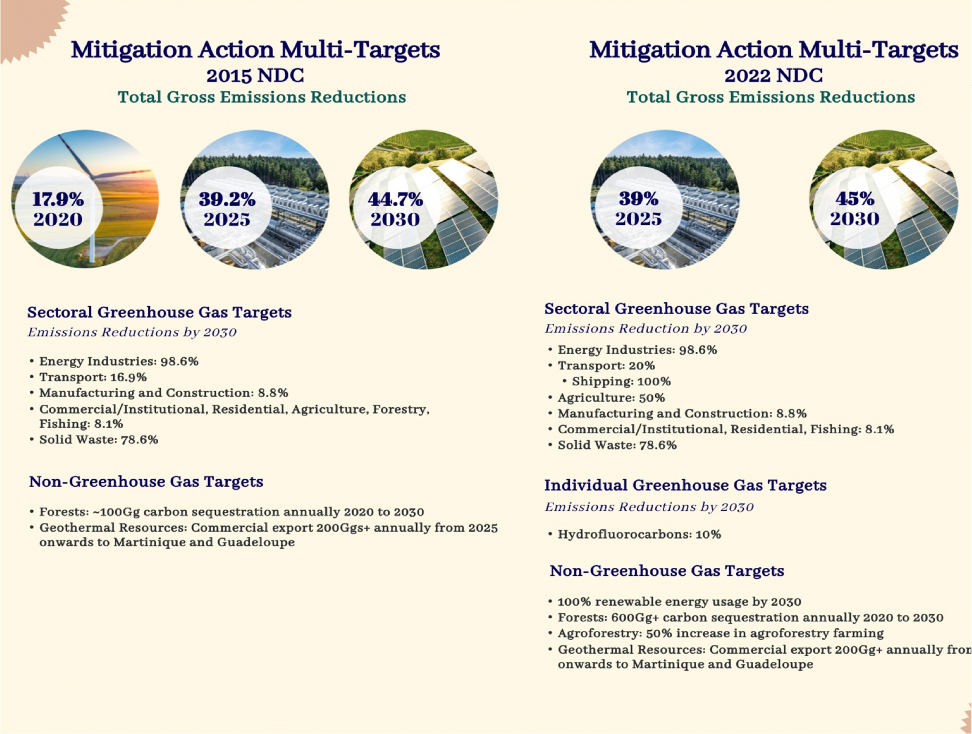
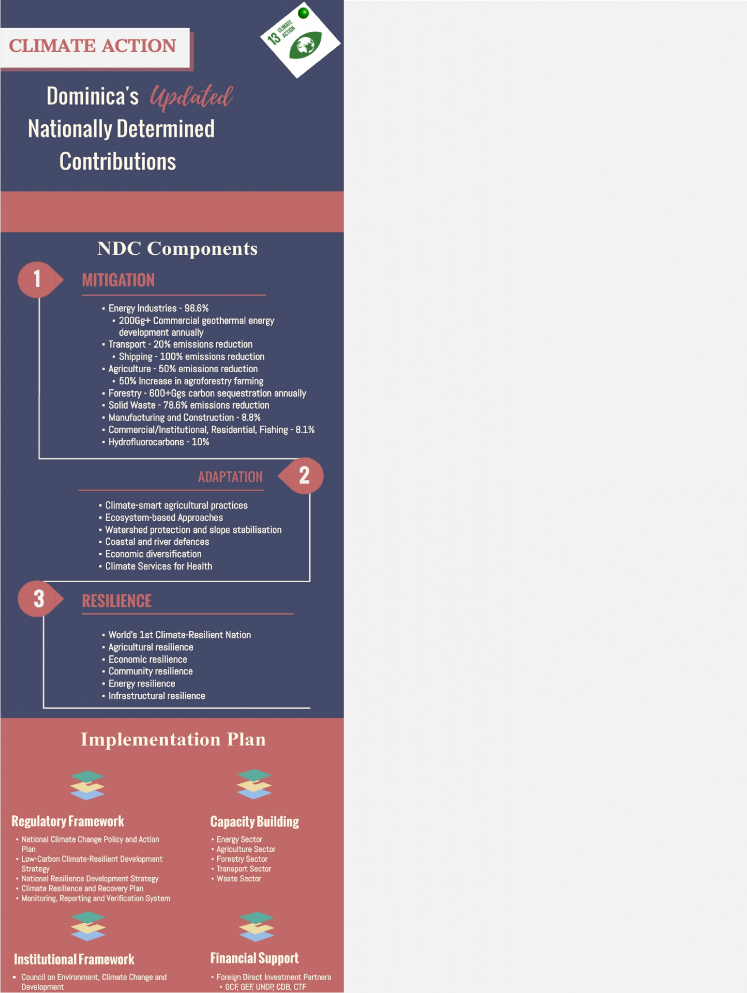
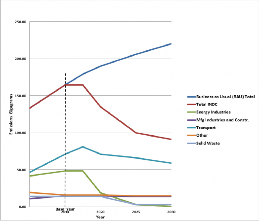
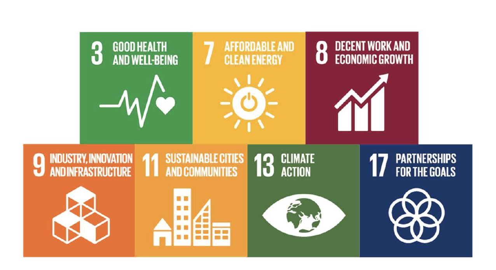
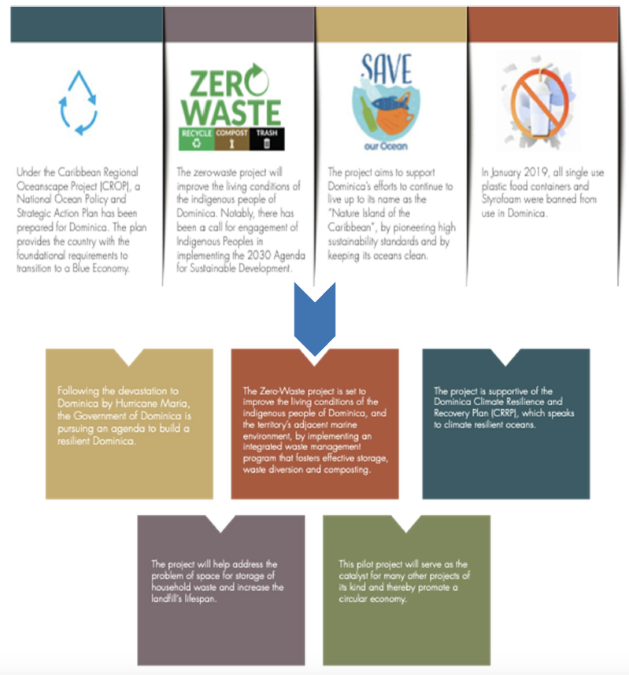
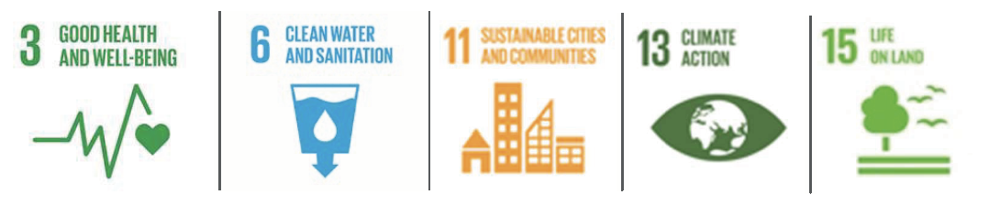
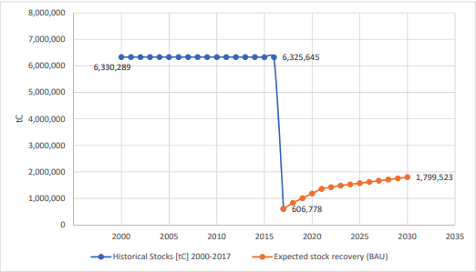

AC Adaptation Communication
AD Activity Data
ADRM Agriculture Disaster Risk Management
AFD Agence Française de Developpement
BAU Business as Usual
CAF Corporación Andina de Fomento
CARICOM Caribbean Community
CARICOF Caribbean Climate Outlook Forum
CBI Citizenship by Investment
CCTF Climate Change Trust Fund
CDB Caribbean Development Bank
CFRN Coalition for Rainforest Nations
CH4 Methane
CIMH Caribbean Institute for Meteorology and Hydrology
CO Carbon Monoxide
CO2 Carbon-Dioxide
CO2e Carbon-Dioxide Equivalent
COP Conference of Parties
CPACC Caribbean Planning for Adaptation to Climate Change
CRA Climate-Resilient Agriculture
CREAD Climate Resilience Executing Agency for Dominica
CRRP Climate Resilience and Recovery Plan
CSA Climate-Smart Agriculture
CTF Clean Technology Fund
DRM Disaster Risk Management
DRR Disaster Risk Reduction
DSWMC Dominica Solid Waste Management Company
DVRP Disaster Vulnerability Reduction Project
EDA Enhancing Direct Access
EE Energy Efficiency
EF Emission Factor
ETF Enhanced Transparency Framework
EV Electrical Vehicles
FAO Food and Agriculture Organisation
FDI Foreign Direct Investment
FRL Forest Reference Level
FOLU Forest and Other Land-Use
GCAR Global Centre for Agricultural Resilience
GCF Green Climate Fund
GDP Gross Domestic Product
GEF Global Environmental Facility
GFCS Global Framework for Climate Services
Gg Gigabyte
GIEP Green Industrial Eco Park
GIS Geographic Information System
GMR Gender Mainstreaming Roadmap
HFC Hydrofluorocarbon
HCFC Hydrochlorofluorocarbon
IDB International Development Bank
IICA Inter-American Institute for Cooperation on Agriculture
IMCM Inter-Ministerial Coordinating Mechanism
INDC Intended nationally Determined Contributions
INC Initial National Communication
IPCC Intergovernmental Panel on Climate Change
ITMO Internationally Transferred Mitigation Outcome
KFW Kreditanstalt für Wiederaufbau
LCCRDS Low-Carbon Climate-Resilient Development Strategy
LCTD Low-Carbon Transport Dominica
LDN-TSP Land Degradation Neutrality-Target Setting Programme
LED Light-Emittting Diode
LULUF Land Use, Land Use Change and Forestry
MACC Mainstreaming Adaptation to Climate Change
ME Monitoring and Evaluation
MPG Modalities, Procedures and Guidelines
MRV Measurement, Reporting and Verification
NAC National Agriculture Council
NAGP National Agriculture Policy
NAP National Adaptation Plan
NCCPAP National Climate Change Policy and Action Plan
NCSA National Capacity Self-Assessment
NDC Nationally Determined Contributions
NFI National Forest Inventory
NFV National Financing Vehicle
NMDM National Machinery for Decision-Making
NMVOC Non-methane volatile organic compound
NRDS National Resilience Development Strategy
N2O Nitrous-Oxide
NOx Nitrogen-Oxides
OECS Organisation of Eastern Caribbean States
PA Protected Areas
PAHO Pan American Health Organisation
PPCR Pilot Program for Climate Resilience
PSIP Public Sector Investment Program
PV Photo-voltaic
RE Renewable Energy
RMS Resource Mobilisation Strategy
SALT Sloping Agricultural Land Technology
SCF Strategic Climate Fund
SDG Sustainable Development Goals
SIDS Small Island Developing States
SLCP Short-Lived Climate Pollutants
SLM Sustainable Land Management
SNC Second National Communication
SO2 Sulphur-Dioxide
SPACC Special Program for Adaptation to Climate Change
SPCR Strategic Program for Climate Resilience
TNC Third National Communication
TWG Technical Working Group
UN United Nations
UNDP United Nations Development Programme
UNFCCC United Nations Framework Convention on Climate Change
WHO World Health Organisation
WMO World Meteorological Organisation
The revision of the Nationally Determined Contributions (NDC) for the Commonwealth of Dominica was led by the Ministry of Environment, Rural Modernization and Kalinago Upliftment, in close collaboration with the Climate Resilience Executing Agency for Dominica.
The Commonwealth of Dominica expresses its sincere gratitude to the United Nations Development Programme (UNDP) and the support received for the development of this updated NDC through its Climate Promise Initiative.
Minister for Environment, Rural Modernization and Kalinago Upliftment
The Commonwealth of Dominica, as a signatory to the Paris Agreement, remains committed to global efforts for climate action and ambition to achieve the ultimate objective of this Agreement – to limit global warming to well below 2oC and to pursue efforts to further limit the temperature increase to 1.5oC above pre-industrial levels, through the periodic updating and enhancing of its Nationally Determined Contributions. Dominica, like many other Small Island Developing States, acknowledges its increased vulnerability to the adverse impacts of climate change and recognises that beyond our efforts to mitigate this threat, we must also adapt to and become resilient against its impacts. Recalling, the passage of hurricane Maria in 2017, which resulted in the destruction of over 90% of our island’s infrastructure and homes, as well as over 85% loss of forest cover, Dominica set on a path to become the World’s First Climate-Resilient Nation. Dominica has begun its journey to climate resilience, as evidenced by the establishment of the Climate Resilience Execution Agency for Dominica, passing of the Climate Resilience Act, development of the Climate Change and Natural Resource Development Bill, and the development of renewable (geothermal) energy resources, which together form the backbone for climate-resilience. This NDC update is holistic in nature through the development of targets for all three pillars of climate action – mitigation, adaptation and resilience; as a show of our commitment. Mitigation actions are focused on the development of our geothermal energy resources, to support our target for 100% renewable energy by 2030, as well as enhanced forest and soil carbon sequestration. Adaptation actions are focused on preparing our agricultural, ecological, natural, health, social and economic systems to withstand the potential adverse impacts. Resilient actions are focused on rebuilding stronger: our communities, institutional systems, economy, homes, infrastructure, natural assets, mindsets, energy sector and agricultural sector through the establishment of Dominica as a Global Centre for Agricultural Resilience. Recognising that our citizens will be affected not only by the impacts of climate change but also by the measures adopted to respond to it, our approach has been country- driven, gender-responsive and participatory with considerations for vulnerable groups and the Kalinago community, to allow just transition of the workforce and support the shift to sustainable, low-carbon and climate-resilient development. Dominicans have realised that we can achieve much more working together than working independently and now more than ever we will continue to stand together and repeat our mantra Dominicans, stronger together!
Honourable Minister Cozier Frederick
By this submission, the Commonwealth of Dominica, communicates an updated and enhanced Nationally Determined Contributions (NDC) in acknowledgement of Article 4 of the Paris Agreement1, with a total greenhouse gas emissions reduction of 45% below 2014 levels by 2030. This updated NDC and its accompanying information replaces the 2015 NDC and as of the date of receipt by the Secretariat, will be considered as the current NDC. Despite challenges, the commitment to enhanced action and ambition, as well as lessons learnt affords the nation the opportunity to still maintain, if not surpass its 2030 target.
Dominica’s NDC is unique by the inclusion of targets for all three pillars of climate action: mitigation, adaptation and resilience. Figure 1 illustrates Dominica’s enhanced mitigation action in its updated NDC compared to its previous submission in 2015. As a display of its determination to become the world’s first climate-resilient nation, this NDC has been enhanced through strengthened and additional targets and actions across all three pillars, as shown in figure 2.
Climate change action is enshrined in law through the development of the Climate Change, Environment and Natural Resource Management Bill 2020, which provides the overarching enabling framework to facilitate Dominica’s transition to low-carbon climate-resilient development.
This NDC in its entirety is conditional upon the receipt of timely access to international climate change financing, technology development and transfer, as well as capacity building support for priority mitigation, adaptation and resilience measures. Recalling also Article 4.8 of the Agreement, as well as decision 4/CMA12 and its Annex I, the Commonwealth of Dominica also provides supplemental descriptive, explanative and contextual information to facilitate clarity, transparency and understanding (table 13) of the updated NDC.
The Commonwealth of Dominica has taken the decision for the adaptation and resilience components of the NDC to constitute a part of its official Adaptation Communication, along with the National Climate Change Policy and Action Plan, 2019-2024 (draft), which is intended to constitute Dominica’s National Action Plan (NAP) in compliance with Decision 9/CMA13.


Mitigation, adaptation and resilience represent the three overarching pillars in the national and global responses to climate change. Mitigation refers to human interventions to reduce the sources or enhance the sinks of greenhouse gases, thereby slowing the rate of global warming. Adaptation refers to all steps taken to cope with the adverse effects, including an adjustment in natural or human systems in response to actual or expected climatic stimuli or their effects, which moderates harm or exploits beneficial opportunities. Resilience refers to the ability of a system, community or society exposed to hazards to resist, absorb, adapt to and recover from the effects of a hazard in a timely and efficient manner, including through the preservation and restoration of its essential basic structures and functions. For Dominica, an integrated response is adopted with sectoral targets across all three pillars. The plans of action and commitments outlined under the mitigation, adaptation and resilience components towards achievement of the Paris Agreement, also support achievement of goals under other international frameworks and agreements including:
The Sustainable Development Agenda 2030 - SDGs 1, 3, 4, 6, 7, 8, 9, 11, 12, 13, 16 and 17
The Sendai Framework for Disaster Risk Reduction 2015-2030 – Targets (a) to (e) and Priorities 1 to 4
Dominica has established an institutional framework to manage and ensure successful decarbonization of the economy, support ambitious climate action, enhance adaptive capacity and strengthen resilience. A regulatory framework has also been developed, which includes legislation, policies, plans and strategies in response to climate change to enhance its capacity to effectively integrate low- emission and climate-resilient actions into national development, economic and social priorities and objectives. In addition, the Government recognises the essential roles of financial support, capacity building, technology transfer and just transition of the workforce, which successful implementation of the NDC hinges upon. A multi-sectoral Monitoring and Evaluation (ME) framework is currently being developed, alongside the
The Commonwealth of Dominica, located at 15o north latitude and 61o west longitude, occupies a central position between the French Territories of Guadeloupe and Martinique to the north and south respectively. The island was formed by volcanic activity, which persists as evidenced by ongoing earthquakes, and the presence of sulphuric springs and steam vents. Known for its rich and diverse natural environment, Dominica has been nicknamed the “Nature Island of the Caribbean”. Dominica is part of a group of 47 countries and territories which have been classified by the United Nations (UN) as Small Island Developing States (SIDS), which face a multitude of unique challenges and are particularly vulnerable to the adverse impacts of climate change.
Dominica’s climate is characterized as tropical maritime with characteristically warm temperatures and intense rainfall. Annually, the climate is distinguished only by rainfall amounts, with a dry season from December to May and a wet season from June to November. The island’s vegetation is lush and dense, owing to the topography and high rainfall amounts which has an annual average ranging from ~1,900 mm in coastal areas to ~5,000 mm in inland areas. The rugged topography results in considerable amounts of orographic rainfall, making it the wettest island in the eastern Caribbean with annual rainfall totals exceeding 10,000 mm (400 inches) in some of the higher elevations and rendering the island susceptible to landslides particularly in mountainous areas. The steep, mountainous terrain alters temperatures, winds and rainfall which results in a number of micro-climates. Dominica’s position within the Atlantic hurricane belt combined with its climate, makes it vulnerable to hydrometeorological hazards.
Dominica was originally populated by Amerindian peoples, known as Kalinago. This is the only island in the Caribbean that still possesses distinct communities of these indigenous people. There is a reserve in the eastern portion of the island referred to as the Kalinago Territory. The population consists mainly of African and mixed African/European descent, with European, Syrian and Kalinago minorities. Large expanses of mountainous topography have limited human settlements to narrow coastal areas particularly in the south and west with approximately 44,000 persons (62%) living along the coast prior to Hurricane Maria.
Dominica’s economy reflects many of the traditional features of a small open economy, which includes a high level of dependence on external trade as a proportion of Gross Domestic Product (GDP), dependence on single sector export products (in this case agriculture) and tourism revenue. Dominica’s main export of agricultural goods include bananas, cereal and pellets, tropical fruits, cassava, citrus, beer, pasta, spices, and vegetables. Although the economy is described as predominantly agricultural, the country is actively exploring prospects in tourism and is also developing the production of geothermal energy. Despite a stable macroeconomic environment, growth has been limited by natural disasters and by international economic developments4. Economic growth in Dominica averaged approximately 3.7% per annum, dropping to 1.5% by 2015 before suffering further decline after Tropical Storm Erika (2015) and Hurricane Maria (2017) resulting in a 9.5 percent decline in GDP for 2017.
Dominica has always been in a vulnerable position economically, socially, culturally, and environmentally. It has been classified among the world’s most vulnerable countries5, given its susceptibility to natural hazards – hydrometeorological and geophysical; as well as its ecological and economic fragility. Dominica is particularly vulnerable to the adverse effects of climate change and extreme weather events. These include the projected increased frequency and magnitude of tropical storms, extreme weather events (flood, drought and heatwaves), unfamiliar rainfall patterns (seasonality and total amounts), sea level rise and heightened storm surges; and the devastating multitude of impacts on lives and livelihoods. Vulnerability to climate change in Dominica, like many other SIDS, is aggravated by external pressures affecting its resilience and adaptive capacity. This includes trade, (positive and negative) impacts of globalization, financial crises, international conflicts, external debt, as well as internal conditions such as population growth, poverty, political instability, unemployment, reduced social cohesion and a widening gap between the rich and poor and their interactions.
Recognising the threats posed by climate change, Dominica has adopted several initiatives to respond to it. In this context, Dominica has established a strong record for climate change adaptation and was one of the few countries chosen to pilot adaptation measures under the Special Program on Adaptation to Climate Change (SPACC). Additionally, as a collaborative initiative between the SPACC program and the Sustainable Land Management (SLM) project funded by the Global Environmental Facility (GEF), Dominica has pioneered: i) vulnerability mapping and “climate proofing” of National Parks Management Plans, and ii) community-based vulnerability mapping and development of community-level adaptation plans, through community engagement and input. In addition, the National Adaptive Capacity Assessment under the Pilot Program for Climate Resilience (PPCR), identified considerable multi-level limitations in climate change risk management capacity: a) systematic, institutional and individual; b) national, sectoral, district and local; c) and within the public sector and civil society.
Key challenges include:
Critical infrastructure in the country is vulnerable to significant loss and damage from extreme weather events, sea level rise and storm surges
Lack of systems, expertise and facilities to collect, store and analyse relevant information and data related to climate change (emissions, impacts, modelling etc.)
Inadequate knowledge and awareness of potential impact of climate change and lack of technical skills to address them
Policies, laws, rules and regulations related to climate change and disaster risk reduction need strengthening and the capacity to enforce these revised regulations need enhancement
Planning for coordinated response to climate change and disaster risk reduction activities need improvement
Dominica’s SPCR is being implemented under the US$35 million Disaster Vulnerability Reduction Project (DVRP) which was officially launched in September 2014. The DVRP is funded by the World Bank, International Development Association (IDA), PPCR, Strategic Climate Fund (SCF) and the Government of the Commonwealth of Dominica. The total approved financing is US$39.5 million.
A climate change risk assessment was undertaken under the National Capacity Self- Assessment (NCSA) and the vulnerability assessments undertaken to develop Dominica’s Climate Change Adaptation Policy and National Communications. The climate change risk assessment was modelled on the process outlined in the Risk Management Guidelines for Climate Change Adaptation Decision Making6. Using a multiple criteria analysis7, each PPCR Technical Working Group (TWG) undertook a sector specific assessment as follows:
Identification of event risks and outcomes risks based on vulnerability assessments contained in Dominica’s Initial National Communication, National Climate Change Adaptation Policy and Second National Communication
Ranking of event-outcome risks in terms of severity of social, economic, environmental impacts (11 indicators used for ranking)
Probability-frequency analysis on prioritized event-outcome risks that scored the highest in terms of severity of social, economic, environmental impact
Once each sector TWG had completed the sectoral risk assessment – stakeholders during the National Consultative Workshop verified the outcomes and developed the list of national priority risks based on top ranked risks for each sector.
Through this climate change risk assessment, national stakeholders identified the following as priority climate change risks:
Table 1: Priority Climate Change Risks for Dominica
| Event-Outcome Risks | Ranking |
|
Increase in extreme events and climate variability (Cumulative Risks) - physical damage to crops and agricultural access roads, impact on agricultural and fisheries productivity, increase of pests or diseases, impact on livelihoods and food security |
10 |
|
Increase in extreme events – more frequent economic setbacks, prolonged recovery periods, stress on economy (including increase in loss of life, impact on tourism arrivals, impact on agricultural production, food security, forest cover) and less attractive environment for foreign investment due to cumulative destruction of critical infrastructure for tourism, manufacturing, agriculture and trade |
10 |
|
Increase in extreme events (increased intensity of hurricanes, flooding, landslides) - increased damage to houses, human settlements, critical infrastructure, business and other properties |
10 |
|
Sea level rise, combined with increased incidents of storm surges - damage to coastal infrastructure (roads, ports, jetties, storage, processing, packing, landing sites) used for agricultural trade and access to markets |
9 |
|
Increased frequency of extreme events - water shortages due to increased drought and storms (including loss to crops) |
9 |
|
Sea level rise - combined with increased incidence of storm surges - damage to coastal tourism facilities: beaches, hotels, airports, cruise ship terminals (including impacts on Kalinago people and farmers’ income loss |
8 |
|
Sea level rise and storm surge - loss of coral reefs, loss of protection to coastal areas and impact of marine ecosystem and associated effect on livelihoods and food security |
8 |
|
Climate variability - loss and impact on marine and terrestrial biodiversity, a key pillar of the tourism sector |
8 |
|
Changes in rainfall intensity - increased coastal marine habitat degradation and damage to fisheries infrastructure |
8 |
|
Increased climate variability - changes in fish and marine mammal migration patterns affecting food security and tourism |
8 |
|
Changes in rainfall patterns - increased incidence of landslides affecting houses, human settlements and infrastructure, in addition to costs for insurance and building loans |
8 |
|
Increase in extreme events - damage to coastal property and infrastructure due to storm surges |
7 |
|
Increase in extreme events - reduced availability of international donor funding due to increased demand for emergency assistance from vulnerable countries |
7 |
|
Changes in national and local temperature regimes - increased damage to buildings and water cisterns from extreme dry conditions |
7 |
|
Sea level rise combined with increased incidence of storm surges - increased costs for insurance, re-insurance and costs to banks providing loans for coastal infrastructure |
6 |
|
Increased climate variability - increased land degradation (temperature variations) - impacts on food production, water quality, health and nutrition |
6 |
|
Changes in rainfall patterns - impact on water quality and supply; costs of water treatment and delivery; and damage to water and communication infrastructure (hotels and restaurants at tipping point and loss of income due to lack of water could put them out of business) |
6 |
|
Increased climate variability - decline in tourist arrivals due to more mild conditions affecting winter tourism market |
6 |
|
Sea level rise and storm surge - damage to coastal infrastructure from sea level rise and higher storm surges and associated impact on tourism (hotels, dive industry, yachting) (Significant cultural loss in Kalinago Territory and loss of beaches for recreation) |
6 |
|
Increase in extreme events - increased cost of coastal resources management |
6 |
|
Increase in extreme events - damage to water infrastructure and impact on costs for water supply |
6 |
*Ranking is based on a scale from 1 to 10, with 1 being the lowest and 10 the highest8.
Dominica’s Protected Areas (PAs) play a critical role in both disaster prevention and recovery by maintaining intact and healthy ecosystems necessary to mitigate natural disasters. Intact habitats and vegetation help stabilize soils, reducing floods, drought, and landslide occurrences as well as sedimentation runoff and provide a physical barrier for coastal inundation. While Dominica’s national PAs are important contributors to Disaster Risk Reduction (DRR), PAs themselves are also at risk from climate change and natural hazards. A risk analysis of climate change and natural hazards to Dominica’s PAs is presented in table 2.
Recently, Dominica was struck by two extreme events which severely tested the country’s climate change adaptation preparedness and resilience readiness. Tropical Storm Erika struck Dominica on August 27th, 2015 resulting in heavy rainfall, flooding, and landslides. In its wake, hundreds of homes were left uninhabitable and thousands of people were displaced. Thirty people died across the island in the nation's worst disaster since Hurricane David. Tropical Storm Erika resulted in total damage and loss of EC$1.3 billion (US$483 million), equivalent to approximately 90% of Dominica’s GDP. Two years later, hurricane Maria made landfall in Dominica on September 18th, 2017 as a Category 5 hurricane with maximum sustained winds of 165 mph (265 km/h) - the most extreme hurricane to ever impact the island. Hurricane Maria resulted in extensive damage to roads and public buildings, including schools, stores and churches, with the entire population being affected in some form. Hurricane Maria accounted for damage in the order of ~226% of GDP, which resulted in a 14.7% decline in GDP. Dominicans acknowledge that their strength is in the resiliency of their people and therefore remain committed in their climate ambition and action, recognising also that the cost of action outweighs the cost of loss and damage responses to inaction. See Box 1 for further details on costs of action and inaction.
Table 2: Natural Hazard Risk Assessment for Dominica’s Protected Areas System
|
Impact |
||||||
|
Negligible |
Minor |
Moderate |
Major |
Catastrophic |
||
|
Likelihood |
Almost certain |
Landlsides, Floods |
Hurricanes & Storms |
|||
|
Likely |
||||||
|
Possible |
Phreatic eruption |
Earthquakes |
||||
|
Unlikely |
Sea-level rising, temperature increases |
|||||
|
Rare |
Pandemics |
Droughts |
Volcano eruption, Tsunami |
|||
|
Risk Level |
Low |
Moderate |
High |
Extreme |
According to Dominica’s CRRP, the cost of no action to reduce climate vulnerability at the national level would be loss and damage equivalent to 77% of GDP by 2100. The cost of taking no concerted action to address the impacts of climate change for Dominica would be loss and damage equivalent to: 6.3% of GDP by 2025, 34.3% of GDP by 2050, 54.4% of GDP by 2075 and 77.3% of GDP by 2100. This is significantly higher than the average projected cost in the Caribbean.
PROJECTED EMISSIONS REDUCTION AND COST OF PRIORITY MITIGATION CLIMATE ACTION| Mitigation Initiative | Cumulative Emissions Reduction (Gg) | Cumulative Cost (US) |
|
Geothermal Power Plant |
39.3 |
75,000,000 |
|
Energy Efficiency Programme |
5.2 |
2,3000,000 |
|
Solar Photovoltaic (PV) Conversion Programme for Hotel Sector |
0.24 |
1,000,000 |
|
Solar Photovoltaic (PV) Conversion Programme for Commercial, Institutional and Manufacturing Facilities |
0.86 |
2,700,000 |
|
Replace Streetlights in Portsmouth with Off-grid Light Emitting Diode (LED) Fixtures |
0.36 |
1,200,000 |
|
Landfill Methane Emissions Reduction |
11 |
4,500,000 |
|
Off-Grid Hybrid Wind, Solar, Biodiesel Generator Back-up in Off-grid Mini-grid Configuration for Dominica’s South-East and East Coasts |
2.92 |
9,000,000 |
In 1994, the Commonwealth of Dominica ratified the United Nations Framework Convention on Climate Change (UNFCCC)9, hereinafter referred to as “the Convention”. The ultimate objective of the Convention is to achieve stabilisation of greenhouse gas concentrations in the atmosphere at a level that would prevent dangerous anthropogenic interference with the climate system; and within a sufficient timeframe to facilitate natural adaptation of ecosystems, ensure food security and sustainable economic development. In fulfilment of one of the obligations under Article 12 of the UNFCCC, Dominica committed to the submission of regular National Communications to the Conference of Parties (COP) through the UNFCCC Secretariat. The first such report, the Initial National Communication (INC) was submitted in 2001. The INC included the following greenhouse gases (GHGs): carbon-dioxide (CO2), methane (CH4), nitrous-oxide (N2O); and non-GHGs: non-methane volatile organic compounds (NMVOCs) and nitrogen-oxides (NOx) and covered the following sectors: Energy, Industrial Processes, Agriculture, Land- Use and Forestry, and Waste.
Dominica began its preparation for the Second National Communication (SNC) in 2006 and submitted in 2012. The SNC reported on the period from 2001 to 2005 and included all the GHGs previously reported in the INC, as well as: hydrofluorocarbons (HFCs), indirect GHGs: sulphur-dioxide (SO2) and non-GHGs: carbon-monoxide (CO), and NOx). The Intended Nationally Determined Contributions (INDC) was submitted in 2015, which later became Dominica’s NDC upon ratification of the Paris Agreement. The INDC covered the following GHGs: CO2, CH4, N2O and HFCs and covered the following sectors: Energy Industries; Transport; Manufacturing and Construction; Commercial/Institutional, Residential, Agriculture, Forestry, Fishing; and Solid Waste. The Third National Communication (TNC) submitted in 2020, reported on the period 2005 to 2017. The TNC included an emissions inventory for the following GHGs: CO2, CH4, N2O, NMVOC, SO2 and HFCs during the reporting period, as well as climate mitigation and resilience measures. These were in part through measures to implement Dominica’s Low-Carbon Climate-Resilient Development Strategy (LCCRDS), including through building the legal and institutional capacity to manage impacts from climate change.
The landmark Paris Agreement was reached at the 21st Conference of Parties (COP21)10, aiming to combat climate change and to accelerate and intensify actions and investments needed for a low-carbon future. The Paris Agreement, which builds upon the Convention, has an overall objective to strengthen the global response to the threat of climate change by limiting global temperature rise this century to well below 2oC above pre-industrial levels and to pursue efforts to further limit the temperature increase to 1.5oC through ambitious mitigation actions. In addition, the Paris Agreement establishes measures to increase the ability of nations to adapt to the adverse impacts of climate change and foster climate-resilient development through consistent finance flows. The Paris Agreement was signed by the Government of Dominica in April 2016 and ratified in September of the same year, with the INDC now becoming the nation’s NDC.
In 2015, in accordance with relevant paragraphs of Decisions 1/CP1911 and 1/CP2012 towards achieving the ultimate objective of Article 2 of the Convention, the Government of Dominica committed through its INDC13, to a progressive reduction of total greenhouse gas emissions below 2014 levels at the following reduction rates: 17.9% by 2020, 39.2% by 2025 and 44.7% by 2030. Total emissions reduction per sector were outlined as follows: Energy Industries – 98.6% (principally from harnessing of geothermal resources); Transport – 100%; Manufacturing and Construction – 8.8%; Commercial/Institutional, Residential, Agriculture, Forestry and Fishing – 8.1%; and Solid Waste – 78.6%.
Dominica, as part of the INDC also included additional mitigation measures which included: continued carbon sequestration of ~100Gg annually during the period 2020 to 2030 due to sustainable management practices; and commercial development and continued harnessing of Dominica’s geothermal resources, which will, from 2025 onwards, enable the country to export significant amounts of renewable energy – estimated to exceed 200Gg annually, to the nearby French Territories of Martinique and Guadeloupe; thereby contributing to the global stocktake under Article 14 of the Paris Agreement.
This was communicated as a conditional submission, dependent upon receiving timely access to international climate change financing, technology development and transfer; and capacity building support for priority adaptation and mitigation measures. These contributions highlighted that for Dominica, there is little distinction between adaptation and mitigation measures and therefore an integrated response would be implemented to build climate-resilience in vulnerable communities, while enabling green growth through the transition to sustainable energy technologies.
In accordance with Decision 18/CMA.114 and its annex (the Katowice Climate Package), as well as Article 13 under the Paris Agreement, Dominica provides an updated NDC containing information under the Enhanced Transparency Framework15 (ETF), which details a set of Modalities, Procedures and Guidelines (MPGs) to build trust and confidence; and strengthen the global response to the threat of climate change. The NDC planning process, progress in the development of the necessary frameworks for climate action and the NDC Implementation Plan are summarised in sections 4.1 and 4.2. Further details on climate action: mitigation, adaptation and resilience, in light of the objective of the Convention as set out in its Article 2 and also Article 7; and progress in NDC implementation are provided in chapters 5, 6 and 7. In addition, information to facilitate clarity, transparency and understanding of Dominica’s NDC, and details on support received and needed in the context of climate change actions under Articles 4, 7 and 11 is also provided.
The review and updating of Dominica’s NDC was led by the Ministry of Environment, Rural Modernization and Kalinago Upliftment, in close collaboration with the Climate Resilience Execution Agency for Dominica (CREAD) and facilitated by the United Nations Development Programme (UNDP) under the Climate Promise initiative. The NDC planning process involved an assessment of the level of progress towards national and sectoral targets, identification of areas for enhanced climate ambition and action, priority capacity needs to support just transition of the workforce; and barriers to target achievement and implementation. These assessments informed a national stakeholder capacity development exercise, which included an institutional capacity assessment to identify critical skills and knowledge gaps for NDC implementation.
This phase involved the identification of the existing or emerging regulatory, institutional and systematic frameworks to facilitate climate action and NDC implementation. In addition, the level of synergies and coherence between institutions and policies, as well as the level of mainstreaming and alignment with national processes and plans; and other global agreements were also assessed. An institutional capacity assessment was conducted to identify areas for capacity building.
A comprehensive capacity gap assessment was undertaken under climate action and implementation at the individual, community, institutional, systematic and national levels. Stakeholders also provided feedback on capacity building requirements necessary for NDC action and implementation.
Recognising the importance of increased national awareness and participation in the NDC process at all levels of society and stages of development, an inclusive approach was adopted. Stakeholder engagement included a broad range of individuals from the public sector, private sector, government officials, non-governmental organisations (NGOs), community-based organisations (CBOs) and civil society. This process was achieved through the use of online surveys, individual key informant interviews and group consultations. These consultations afforded national stakeholders with an opportunity to report on relevant community-based, sectoral and national level initiatives and activities, provide input to the climate change negotiations, engage with members of the Government and negotiators whilst also suggesting ideas to government for filling of any gaps that may exist in Dominica’s approach to the Paris negotiations. It also provided an opportunity for stakeholders to engage in the work done on enhancing NDCs and provide their inputs on what targets they would like to be incorporated into the NDC and what should be put forward as Dominica’s contribution. This process further enhanced the culture of a sustainable national dialogue, provided a platform for all stakeholders who have an interest in climate change negotiations and also serves to increase acceptance of implementation measures.
An assessment of the level of progress in NDC implementation was conducted, as well as identification of barriers to progress. Experiences and lessons learnt, combined with technological advancements and new financial partnerships and collaborations led to the revision and updating of targets, to reflect the incorporation of new sectoral, sub-sectoral and non-sectoral targets, as well as opportunities for enhanced ambition with pre-existing targets.
An extensive literature review was performed making use of sectoral, national and regional documents, as well as international communications. This included, inter alia, Acts, Bills, Policies, Plans and Strategies.
The Covid-19 pandemic has disrupted lives and livelihoods globally, presenting Governments with new and intensified challenges. This has resulted in negative impacts not only on health and the economy but also on climate action under SDG 13 and the Paris Agreement. Significant funds necessary for financing climate action in developing countries has been diverted to combat the pandemic, resulting in climate action and NDC submission delays. The stakeholder engagement aspect of the NDC review and drafting process has also been affected by the pandemic, with all activities being performed virtually.
Driven by Dominica’s determination to become the world’s first climate-resilient nation, there have been significant advancements in the development of the supporting institutional, regulatory and systematic frameworks for NDC implementation. Successful NDC implementation requires inter-ministerial and inter-sectoral coordination, new or updated laws and policies, financial support and continuous monitoring and evaluation. The Government of Dominica has shown its commitment to climate action through the development of institutional, regulatory and systematic frameworks, upon which successful NDC implementation hinges on. Dominica’s mainstreaming of climate change into national and sectoral development planning is evident in their strong track record of regulatory development and alignment with other global agreements, obligations and goals such as the Sustainable Development Agenda 2030 and the Sendai Framework for Disaster Risk Reduction, institutional strengthening and project development. In addition, Dominica is in the process of expanding its Measurement, Reporting and Verification (MRV) system for mitigation action and developing a Monitoring and Evaluation (ME) framework for adaptation and resilience.
Duties of the Council on Environment, Climate Change and Development include:
Oversight of the implementation and periodic revision of Dominica’s Nationally Determined Contributions and Dominica’s Low Carbon Climate Resilient Development Strategy
Co-ordinating environmental and natural resource planning and management
Facilitating consultation and co-operation between government departments and the public in all environmental and natural resource management activities
Directing the formulation of national policies on sustainable development, environmental protection and natural resource management
Co-ordinating the integration of climate change considerations into the environmental impact assessment process
Providing direction and guidance on the formulation and implementation of national and sector policies to support the transition to low carbon climate resilient development
Monitoring and reviewing of, and reporting on national efforts to achieve the transition to low carbon climate resilient development and sustainable development
The Council on Environment, Climate Change and Development shall constitute the National Climate Change Committee, comprising:
(a) The Director of the Department of Climate Change, Environment and Development who shall be the Chairperson
(b) The head or nominated representative from –
Department responsible for Agriculture
Department responsible for Fisheries
Department responsible for Forestry, Wildlife and Parks
Environmental Health Department
Government Meteorological Services
Office of Disaster Management
Physical Planning Department
Dominica Bureau of Standards
Ministry responsible for Kalinago Affairs
Ministry responsible for Energy
Ministry of Finance
Ministry of Justice, National Security and Immigration
Department of Environment, Climate Change and Development
Dominica Solid Waste Management Corporation
Dominica Water and Sewage Corporation
Dominica Electricity Services Limited
Dominica Association of Local Authorities
National Association of Youth in Agriculture
National Association of Non-Governmental Organisations
Invest Dominica Authority
Operating as a statutory government agency, the Climate Resilience Execution Agency for Dominica (CREAD) leads and coordinates strategic initiatives across sectors in the Commonwealth of Dominica with the goal of making the country the world’s first climate-resilient nation. CREAD acts to bolster the ability of the business community, public services and social sector partners to build strong and resilient communities, develop adaptive infrastructure, accelerate economic growth, strengthen institutional systems, enhance Dominicans’ capacity to respond to the local impacts of global climate change, and set an example for the rest of the world on how to respond to the challenges of a changing climate.
Table (3): Institutional, Regulatory and Systematic Frameworks in support of the NDC Implementation Plan
| Institutional |
|
Council on Environment, Climate Change and Development |
|
Department of Climate Change, Environment and Development |
|
National Climate Change Committee |
|
Climate Resilience Execution Agency for Dominica |
|
Environmental Coordinating Unit |
|
Energy Conservation Unit |
|
Sustainable Development Tribunal |
|
National Green Certification Institute |
|
Public-Private Sector Investment Committee |
| Regulatory |
|
Land Degradation Neutrality – Target Setting Programme |
|
NDC Gender Mainstreaming Roadmap |
|
Medium Term National Agriculture Policy (2021-2030) |
|
NDC Gender Mainstreaming Roadmap |
|
Climate Resilience Act |
|
National Resilience Development Strategy |
|
Climate Resilience and Recovery Plan |
|
Climate Change, Environment and Natural Resource Management Bill |
|
Energy Conservation Policy and Action Plan |
|
Climate-Resilient Water Resource Management Policy |
|
Climate-Resilient Forest Resource Management Plan |
|
Energy Conservation Policy and Action Plan |
|
National Energy Policy |
|
National Climate Change Policy and Action Plan (2019-2024) |
|
Agriculture Disaster Risk Management Plan (2014-2019) |
|
Strategic Program for Climate Resilience |
|
Low-Carbon Climate-Resilient Development Strategy |
|
Public Sector Investment Programme |
|
National Strategy for Health |
|
Draft Gender Policy |
|
National Gender Equality Policy |
|
Tourism Policy |
|
Environmental and Planning Regulations for Renewable Energy (draft) |
|
Geothermal Development Bill (draft) |
|
Dominica Forestry Policy |
|
Disaster Management Plan |
|
National Emergency Management Policy |
|
National Shelter Policy |
|
Growth and Social Protection Strategy (GSPS) |
|
National Biodiversity Strategy and Action Plan |
| Systematic |
|
Measurement, Reporting and Verification Framework |
|
Monitoring and Evaluation Framework |
|
Centre of Excellence for Data in Resilience Decision-Making |
|
Public Sector Investment Programme Performance Management Framework |
|
Climate Change Trust Fund |
|
ResilienSEA Blue Economy Investment Fund |
Dominica has prioritised sustainable development, as evidenced by the many projects in the pipeline to ensure achievement of the Sustainable Development Goals (SDGs) by 2030. Climate change poses unique threats to sustainable development, however, Dominica’s Citizenship by Investment (CBI) Program16 has been a crucial element in funding many of the projects that have put them well on track to attain the SDGs and which also have climate change adaptation, resilience and mitigation co-benefits17.
Through the Centre of Excellence for Data in Resilience Decision-Making, a dedicated Geographical Information Systems (GIS) unit within the Ministry of Economic Affairs, Planning, Resilience and Sustainable Development will be established. This will centralize the gathering of data (GIS and beyond), and institutionalize a data-driven approach to all key planning decisions. This unit will be critical to the finalization and implementation of the Resilient Dominica Physical Plan, including activities related to land management, hazard mapping and infrastructure planning.
In order to achieve the Government’s climate-resilience vision, sectoral policies, strategies and budgets - notable the PSIP - must be synchronized to Dominica’s climate-resilience targets specified in the CRRP, along with globally-recognized SDGs. This will require adjustments to the budget- setting process and criteria, to include the definition and weighting of resilience- and SDG-related indicators. It will also focus on putting into place efficient and effective organizational structures and operating procedures to enable delivery on resilience agenda. A public service where there is a culture of continuous improvement will be developed, public officers will better understand how they can and should contribute to strategic objectives and their performance will be measured so as to incentivize such outputs and outcomes.
Measurement, Reporting and Verification systems play a significant role in effectively tracking and improving the implementation of mitigation goals and policies articulated under countries' NDCs. MRVs are foundational to the national and global response to climate change and will enable Dominica to meet its international reporting requirements such as National Communications, Biennial Update Reports, and National GHG inventories. The initial phase involves the measurement and monitoring of data and information on greenhouse gas emission estimates, mitigation actions and support received. This is followed by reporting of data collected through the development of national inventories. The final stage involves periodic verification of the data via an independent review and assessment to establish accuracy and reliability. The MRV system for the forestry sector was recently developed. Measurement and monitoring will take place using the Collect Earth tool for the annual assessment of land-use and land-use changes, the reporting process will be facilitated by the GHG inventory, which will be updated annually; and verification will be through the UNFCCC REDD+ Technical Assessment (refer to section 5.2.1.1 for further details). A MRV system for HFCs has also been developed to establish a usage baseline, update emissions estimates and formulate a phase-down plan. There are also plans for the development of a MRV system for the transportation sector under the Low-Carbon Transport Dominica Project (refer to Box 8 and table 12).
Dominica is also in the process of developing a Monitoring and Evaluation framework for all climate change adaptation and resilience actions under the Paris Agreement. This will support all projects under the Public Sector Investment Program. A ME framework for the agriculture sector has been developed through the National Agriculture Policy (NAGP), which will facilitate effective management and oversight of its implementation. Refer to section 7.2 for further details. A ME framework, within the context of climate change, is a tool to support the understanding and prioritization of adaptation and resilience actions to assist in decision-making. It facilitates the measurement and assessment of the performance of systems in place, in order to effectively manage development results, contributing to evidence-based decision-making.
Well-designed and functioning institutional frameworks are the basis for successful decarbonization of the economy, to support ambitious climate action, enhance adaptive capacity and strengthen resilience. In this regard, the Government of Dominica has undertaken a national institutional capacity assessment to identify critical skills and knowledge gaps for NDC Implementation. This assessment will increase capacity in areas such as project management, intra- and inter-agency coordination, development of methodological procedures and guidelines, decision-support tools, stakeholder management, monitoring and evaluation skills and systems to support NDC implementation.
To achieve its ambitious emissions reduction target and support the transition to low-emission, climate-resilient development, Dominica recognises that its workforce will be impacted. The transition to an environmentally sustainable economy and society presents major opportunities, as well as challenges for the nation. As a result, the impacts18 of mitigation, adaptation and resilience policies and measures on the workforce and on the creation of decent work and quality jobs has been taken into consideration. Dominica strives for the transition towards an inclusive and low-carbon economy to be just and fair, while at the same time maximising opportunities for economic prosperity, social justice, rights and social protection for all, leaving no one behind. It is also recognised that just transition will help in the achievement of the sustainable development goals, specifically goals 1, 3 and 8. In this regard, Dominica has undertaken a multi-sectoral capacity-gaps assessment for the whole of the economy in support of the just transition, as well as an assessment of the financial requirements to achieve this. Tables 13, 15 and 17 present some of the capacity gaps and the financial support required.
Mainstreaming gender equality in support of a more inclusive approach to climate action offers Dominica a pathway to more effective, climate-resilient action. The Government of Dominica recognises that women, as well as vulnerable groups (elderly, disabled etc.) are disproportionately affected by the negative impacts of climate change, while at the same time represent an underexploited and, in some instances, untapped resource. In this regard, important steps have been taken to harness the knowledge, strength and contributions of all people, understand the gender-differentiated impacts of climate change, empower all persons regardless of gender to manage and respond to climate risks through the development of a draft NDC Gender Mainstreaming Roadmap (GMR). This GMR will guide the integration of gender across institutional and coordination mechanisms, which support NDC implementation among Ministries of the Commonwealth of Dominica (refer to Box 2 for further details).
The Government commits to build on previous resolutions and advance the commitments made within national, regional and international frameworks including the 2006 National Policy and Action Plan for Gender Equity and Equality, the Beijing Platform for Action, the Convention on the Elimination of All Forms of Discrimination Against Women, Commonwealth Plan of Action for Gender and Development, OAS/CIM Inter-American Commission on Women, CARICOM Plan of Action and the Sustainable Development Goals. The approach recognises the need to take social and economic differences between men and women into account to ensure that proposed policies and programs have intended and fair results for men, women, boys and girls. The vulnerability of women and other vulnerable groups was a key determinant in adopting a focus on vulnerable communities, as identified within the Household and Vulnerability Communities Survey, the cornerstone of Dominica’s SPCR. As outlined in Dominica’s LCCRDS, the key measures required to address the vulnerability of women to climate change impacts include:
The construction of community emergency shelter
Training in vulnerability assessment and risk management
Provision of social safety nets in the form of micro-finance and micro-insurance to assist women in rebuilding homes, businesses and lives after an extreme event.
Access to the CCTF – 40% to be reserved for women
In addition, several strategies which Government will advance gender equality and inclusion through are found within the NRDS19 and the CRRP20. Projects developed under the CRRP will promote gender equality meaning that women, men, girls and boys enjoy the same human rights status, have equal opportunities, equal access and control over resources and equal participation in decision making. Delivery entities will apply the principles of equality to project design and operation. Under the NRDS, gender equality will be enhanced through the following strategies:
Accelerate the approval of the National Policy and Action Plan for Gender Equity and Equality which makes special consideration for emerging and relevant gendered issues specific to the national context
Strengthen capacity-building opportunities for women, girls, and vulnerable groups to scale up their participation in decision making and in the labour market
Design gender-specific programs for men while ensuring these do not put women at a disadvantage
Ensure sustainability of efforts by promoting gender sensitivity education and training to build a society that champions gender issues
Reinforce priorities around poverty reduction, promotion of justice and economic and social empowerment of women and girls informal sector work and contraceptive use to ensure Sustainable Development
Strengthen mechanisms to improve the management of gender issues
Support gender sensitive research, analysis and development of a highly disaggregated statistical base and information for implementation strategies
Enhance capacity to monitor and assess progress in meeting gender equality commitments specified in international and regional treaties and conventions, as well as in the implementation of the recovery program
Government recognises that delivery systems under the CRRP must be attuned to the challenges and obstacles faced by vulnerable, as well as, disadvantaged groups and take special measures to protect these. Climate change will have severe impacts for the Kalinago people due to the vulnerability of the community. Government also recognizes that the Kalinago people have consistently remained the most significantly disadvantaged group in Dominica. The entire way of life and culture of the Kalinago is under threat from climate change, with impacts on the Territories economy and natural resources resulting in increased poverty and hardship. Government, therefore, acknowledges its responsibilities to the Kalinago peoples and is committed to working and supporting them in the realization of self-determination and other human rights as outlined in the UN Declaration on the Rights of Indigenous Peoples. Government promises to pursue the integration of indigenous people’s perspectives, cultures and language into mainstream policies, plans and programs in order to reverse the factors that marginalize them in many contexts and systematically change their lives for the better. Government takes notes of the successes and innovations of the Kalinago people, particularly their remarkable ability to preserve a culture which has been threatened in several contexts, demonstrating their history of resilience and have proposed specific strategies in the NRDS, which fall under capacity building, promotion of social justice and preservation of culture. Priority climate change adaptation measures have been identified in collaboration with the Kalinago Group to reduce threats to the people, culture, livelihoods and existence of the Kalinago Territory:
Design and implementation of wide-spread education and awareness program to sensitize the Kalinago people to climate change risks and measures to address these risks
Establishment of a climate change ‘easy access trust fund’ specifically for the Kalinago people to assist in climate change measures to address threats to agriculture production, fishing and food security
Construction of community disaster shelters to house persons in time of disaster
Identification and construction of a landing site in the Territory for the fishermen who are unable to travel to Marigot and desperately want to maintain their families
Provision of training in food preservation and water management
Establishment of measures to address impacts on the resilience of natural resources
Prevention of construction of houses and roads in vulnerable areas and ensure buildings comply with building codes
Provision of training on climate change risk management measures
Under the Comprehensive Risk Management Framework and Sustainable Climate Change Financing component of the SPCR, micro-finance and micro-insurance was established for the private sector and vulnerable segments of society including: farmers, fisherfolk, women and vulnerable communities in particular the Kalinago people.
Attracting and engaging Foreign Direct Investment (FDI) is an important pillar of economic development particularly for developing countries. Dominica has been exemplary in leveraging support from major funding bodies, including, inter alia, Green Climate Fund (GCF), Global Environment Fund (GEF), United Nations Development Programme (UNDP), Clean Technology Fund (CTF) and the Caribbean Development Bank (CDB). These funding bodies play a major role in supporting climate action and helping Dominica achieve its NDC commitments.
The Climate Change and Environment Trust Fund will be administered by the Department of Environment, Climate Change and Development. It will be used solely to finance:
The implementation of:
(i) Dominica’s Nationally Determined Contributions
(ii) Dominica`s Low Carbon Climate Resilient Development Strategy
(iii) Dominica`s Climate Change Adaptation Policy, as amended from time to time
Community climate change adaptation and mitigation measures consistent with Dominica’s NDC, LCCRDS and Climate Change Adaptation Policy, as amended from time to time
Development and implementation of policies formulated pursuant to section 14 of the Climate Change, Environment and Natural Resource Management Bill - “debt for nature” exchange programs
Establishment of eco-tourism or private conservancy areas and schemes
Protection of carbon sinks pursuant to the provisions of the United Nations Framework Convention on Climate Change
Expenses incurred in any environmental audit, inspection or monitoring including the retention of qualified specialists
Expenses incurred in any alternate dispute resolution process that may be established under the provisions of this Act including the fees of any mediator, arbitrator of facilitator
Costs of any environmental mediation under the provisions of this Act
Environmental remediation or clean-up of any contaminated or polluted site
This fund seeks to support the development of viable and sustainable businesses based on or linked to Dominica’s rich marine environment. It will tap private and social sector investment, steering it towards commercial or quasi-commercial ventures that support the overall climate resilience ambitions of the Government. Managed by a dedicated, objective and credible Investment Committee with experience in high-impact investing in the blue economy, it will provide social, environmental and financial returns (that is, a triple bottom line) to meet the expectations of a range of investors. It will be complemented by a technical assistance fund to support the development or expansion of innovative business in the sector.
Dominica’s sustained commitment to gender equality is established by the acceptance of a 2006 National Gender Equality Policy and a 2019 Draft Gender Policy. The NDC Gender Mainstreaming Roadmap (GMR) for the Commonwealth of Dominica was constructed from rich strategic plans and policies generated by the Government of the Commonwealth of Dominica to comprehensively guide the Climate Resilience strategy and gender equality goals of the society. Additional data were gathered from key consultations and interviews with sectoral representatives from Ministry officials, professionals working in disaster risk preparedness, climate-related projects and civil society on the island. A first draft of the Roadmap was validated in May 2021 by representatives from the above categories and UNDP project personnel.
The Roadmap establishes the enabling environment, required outcomes for climate and gender goals, a baseline for measurement and management of the combined goals and the conceptual analysis of gender and gender mainstreaming, which allowed for the development of a customized gender and climate mainstreaming model for Dominica. Aligning gender equality goals with the climate- resilient strategy of Dominica, the model proposed for achievement of both is an interlocking one, combining practical needs that focus on adaptation measures in the short and medium term, with strategic interests which address mitigation in the longer term. It sets out governance considerations, socio-economic, demographic and cultural details, as well as a gender analysis which will serve as valuable and necessary gender and climate capacity building tools for implementers of the Roadmap.
The NDC Roadmap which is located within five sectors: Agriculture, Waste Management, Transport and Energy, Tourism and Finance. The Roadmap sets out the main steps required for the translation of gender and climate goals into actionable, clear and user friendly sector based activities. The
Roadmap process actively builds on the policy, institutional and regulatory framework within Dominica while seeking to address the evolving challenges around public information and education, sex disaggregated data, monitoring, evaluation and reporting systems on gender and climate change. The Roadmap summarizes the key leveraging points and desired targets and indicators. The NDC implementation roadmap covers the time period 2021 to 2030. It proposes that the primary vehicle for taking forward the Roadmap implementation will be the National Machinery for Decision Making (NMDM) and CREAD, with coordination by the Ministry of Economic Affairs, Planning, Resilience, and Sustainable Development.
Five priority areas have been identified for Implementation, Monitoring and Reporting on Gender Mainstreaming and Climate under the GMR. These are as follows:
Capacity-building, knowledge management and communication
Gender balance, participation and women’s leadership
Coherence
Gender-responsive implementation and means of implementation
Monitoring and reporting
Co-operation and partnerships are embodied in the Paris Agreement. In this context, Parties may pursue voluntary cooperation in the implementation of their NDC to facilitate enhanced ambition in their mitigation and adaptation actions. The development of carbon markets and the use of Internationally Transferred Mitigation Outcomes (ITMOs) in NDCs promote sustainable development, environmental integrity and transparency. Under Article 6.2, ITMOs count toward countries’ NDCs, support global mitigation efforts (under Article 6.4) and involve more substantial government participation than under the Clean Development Mechanism of the Kyoto Protocol. It is important to note that the use of carbon markets to further mitigation goals should only be an option for a buyer country who has a NDC which is fully aligned with a 1.5℃ trajectory.
To support the mission of a green economy and green energy development, Dominica has engaged in partnerships with donor organisations including the Green Climate Fund, World Bank, United Nations Development Programme, Caribbean Development Bank and the Clinton Foundation. Dominica’s Citizenship By Investment Programme has also played a pivotal role in the generation of foreign direct investment to propel their climate resilience agenda under the Paris Agreement and the SDGs.
The Commonwealth of Dominica has signed a bilateral agreement with Switzerland at COP26 (inset above), enabling Dominica to sell its carbon credits in order to help Switzerland meet its Paris Agreement emissions pledge. The agreement was signed by Dominica’s Minister for the Environment, Rural Modernization and Kalinago Upliftment, the Honourable Cozier Frederick. As signatories to these agreements, both nations set a standard for international climate projects which must meet strict environmental protection standards. Switzerland’s funding priorities for Dominica include the electrification of the transport sector and the development of a geothermal plant. The development of Dominica’s geothermal resources will not only reduce exchange and promoting economic growth. International financial support through this bilateral agreement, enables the Government of Dominica to build a clean and resilient energy system and reinforces their commitment to become the world’s first climate-resilient country.
A Memorandum of Understanding (MOU) between the Climate Resilience Execution Agency for Dominica (CREAD) and Kenesjay Green Ltd. (KGL) was signed by Chairman of KGL Philip Julien, to explore the development of green projects in Dominica. Under the MOU, CREAD and KGL have established a working partnership to facilitate collaborative development of a GIEP, green hydrogen production, carbon sequestration and green industries. KGL will serve as a private sector partner and project developer and work with CREAD to develop identified investment opportunities, in collaboration with bilateral, multilateral, and private sector partners. It will conduct a country assessment focused on identifying potential priority investments to accelerate the Dominica’s transition to a low-carbon economy. KGL together with CREAD, will pursue commercially viable investment opportunities based on the utilisation of geo-thermal reservoirs, applying breakthrough clean technology in upstream and downstream applications, to generate cost competitive green hydrogen and Power-to-X opportunities. There are also plans for KGL to assist in necessary capacity building for the business activities within the GEIP. According to Mr. Julien, these investments will further develop the Caribbean regional grid infrastructure
On November 23, 2021 the Government of the Commonwealth of Dominica approved the establishment of a National Conservation Fund with start-up funds from the Caribbean Biodiversity Bank. The Ministry of Blue and Green Economy Fisheries and National Food Security is being assisted by the AG Chambers on the establishment of the NCTF. The core business of Fund wil be to mobilize finances from diverse sources—including international donors, national governments, and the private sector—and to direct these resources to multiple programs/projects on the ground through NGOs, community based-organizations and government agencies. Funding will be utilized to invest in areas of biodiversity, protected areas management, conservation, investment management, and financial and conservation related policies in support of national priorities and international commitments.
The action of the NCTF will have important implications form the NDC, as among other things will focus actions on protected area both terrestrial and marine serve as the biggest sources of carbon sequestration
Under the “Comprehensive Risk Management Framework and Sustainable Climate Change Financing” component of Dominica’s Strategic Program for Climate Resilience, a Climate Change Trust Fund (CCTF) is to be established. The CCTF is expected to provide support to priority community climate change risk management measures identified through community vulnerability mapping and adaptation planning.
Climate Change and Environment Trust Fund will be administered by the Department of Environment, Climate Change and Development. It will be used solely to finance: The implementation of:
Dominica’s Nationally Determined Contributions
Dominica`s Low Carbon Climate Resilient Development Strategy
Dominica`s Climate Change Adaptation Policy, as amended from time to time
Building capacity and capability to design, structure and finance sustainable projects
Providing concessional financing to sustainable projects and initiatives. Financing instruments will be defined and developed as part of the proposed Readiness Programme including:
Loans, grants and contingent grants for sustainable projects and initiatives
Loan guarantees for RE, EE, low carbon and blue economy investment projects
Risk-sharing support via subordinated/mezzanine debt and junior equity
Technical assistance structuring contracts with low carbon, and climate service companies
Grants and contingent grants for feasibility studies and sustainable projects and initiatives
The Jamaican Government is exploring the bond market as a source of debt capital to finance innovative and new business opportunities to enhance resilience, through the establishment of a GCF-funded Project: Caribbean Green Bond Listing on the Jamaica Stock Exchange (JSE). This green bond market has the potential to attract local, regional and international investors who can leverage support for climate resilience and low-carbon development.
JSE has the potential to be a primary regional financial institution, facilitating transformative low-carbon development regionally. The Commonwealth of Dominica has specifically expressed interest in collaborating with this readiness grant proposal and noted that the objectives of the proposal are fully aligned to the country’s priorities. Dominica’s LCCRDS calls for sustainable financing for low carbon technologies and energy conservation. The introduction of the green bond market has the potential to attract potential investors to support renewable energy initiatives, including use of geothermal energy. The optimal utilization of these for: (i) geothermal power production, interisland electricity export via undersea cable, the establishment of Green Industrial Eco Parks, electric transportation and other usage, is central to the success of its
The Government of Dominica has made a commitment to the progressive reduction of total GHG emissions at the following rates: 39% by 2025 and 45% by 2030 below 201421 levels. These overall targets do not include the LULUCF sector. Sectoral GHG emission reduction targets by 2030 have also been identified as shown below:
Energy Industries: 98.6%
Agriculture: 50%
Solid Waste: 78.6%
Industrial Processes: 8.8%
Transport: 20%
Shipping: 100%
Commercial/Institutional, Residential, Fishing: 8.1%
The Government of Dominica has set a target to reduce HFCs emissions by 10% by 2030, based on a recently completed baseline consumption and phase-down assessment. Additional non-greenhouse gas targets have also been identified for renewable energy (section 5.2.2), as well as the LULUCF (section 5.2.1) and Agriculture (section 5.2.3.1) sectors. For renewable energy, Dominica has set a target of 100% renewable energy usage by 2030, principally from the harnessing of geothermal resources, as well as synthetic fuels when it becomes feasible (refer to Box 7). In addition, the commercial development of Dominica’s geothermal resources, will from 2027 onwards, facilitate export to the nearby French Territories of Martinique and Guadeloupe (estimated to exceed 200Gg annually), contributing to the global stocktake under Article 14. This is projected to result in ~39.3Gg emissions reduction. For the LULUCF sector, the overall target has been defined as 980% increase in carbon sequestration above 201822 levels by 2030. Benefitting from forest conservation, sustainable management of forests and enhancement of carbon stocks as guided by the Warsaw framework for REDD+, it is projected that forests in Dominica will regenerate and will sequester ~648Gg carbon annually during the period 2020 to 2025 and ~621Gg during the period 2025 to 2030 assuming a return to BAU scenario23, with a total removal of -6,995Gg CO2e by 2030.
The GHGs covered by Dominica’s NDC include:
Carbon-dioxide (CO2)
Methane (CH4)
Nitrous-oxide (N2O)
Non-methane volatile organic compounds (NMVOC)
Sulphur-dioxide (SO2)
Hydrofluorocarbons (HFCs)
Table 4: Greenhouse gases included in the National Greenhouse Gas Inventory
| Greenhouse Gas | ||||||
| Year | CO2 | CH4 | N2O | NMVOC | SO2 | HFCs |
|
2005 |
119.00 |
1.56 |
0.097 |
2.30 |
0.218 |
0.003 |
|
2006 |
122.01 |
1.32 |
0.0054 |
0.172 |
0.250 |
0.042 |
|
2007 |
128.46 |
1.32 |
0.0054 |
0.074 |
0.274 |
0.056 |
|
2008 |
122.46 |
1.37 |
0.0055 |
0.142 |
0.248 |
0.060 |
|
2009 |
133.78 |
1.33 |
0.0054 |
1.110 |
0.282 |
0.049 |
|
2010 |
141.56 |
1.33 |
0.0054 |
0.043 |
0.299 |
0.046 |
|
2011 |
149.80 |
1.35 |
0.0054 |
0.850 |
0.316 |
0.045 |
|
2012 |
158.91 |
1.37 |
0.0054 |
0.583 |
0.335 |
0.053 |
|
2013 |
161.02 |
1.37 |
0.0054 |
0.358 |
0.339 |
0.046 |
|
2014 |
167.23 |
1.38 |
0.0053 |
0.645 |
0.355 |
0.051 |
|
2015 |
170.14 |
1.38 |
0.0053 |
0.524 |
0.362 |
0.049 |
|
2016 |
169.83 |
1.38 |
0.0053 |
0.481 |
0.356 |
0.049 |
|
2017 |
156.20 |
1.55 |
0.0048 |
0.455 |
0.305 |
0.046 |
Dominica’s TNC submitted in 2020 presented a GHG inventory with estimates for the period 2005 to 2017, as shown in table 4. These estimates were calculated based on the 2006 IPCC Guidelines for National GHG Inventories. However, default emission factors were used which presented a certain level of uncertainties in the estimates. Figure 3 shows the Business as Usual (BAU) scenario for the period 2005 to 2030, total and sectoral emissions from 2005 to 2030. The BAU scenario was based on information presented in Dominica’s Second National Communication, which provided emission changes from 2000 to 2005 as the starting point. The projections for sectoral emissions post 2014, were derived from the application of the energy intensity value for each of the mitigation measures analysed and further categorized according to the reporting year. Total emissions per year were the total of the sectoral emissions for each year.
In 2021, an HFC Assessment and Legislative Amendments for HFC Phase-down was conducted. This baseline assessment will support Dominica’s future NDC cycles, as well as support the ratification process for the Kigali Amendment. The objective of the HFC consumption study was to aid the country in the establishment of a consumption baseline, identify usage trends and identify the sectoral distribution of consumption. This study will also provide the country with a comprehensive overview of its national market by determining the sectoral consumption of hydrochlorofluorocarbons (HCFCs) and HFCs and legislative amendments required to control HFCs. Under the Kigali Amendment Obligations, Dominica has established a phase-down plan which will take place in three stages, using 2020 to 2022 as the baseline period.
Figure 3: Total and Sectoral GHG emissions scenarios from 2005 to 2030

Table 5: Estimated HFC phase-down schedule for the period 2024 to 2045
| Year | Phase-down % | Max HFC Consumption (tCO2) | |
| Consumption Freeze |
2024 |
- |
22,446 |
|
Stage I |
2029 |
10% |
20,201 |
|
Stage II |
2035 |
30% |
15,712 |
|
Stage III |
2040 |
50% |
11,223 |
|
Stabilisation |
2045 |
80% |
4,489 |
These mitigation targets will be achieved through a comprehensive suite of sectoral mitigation measures, including the development of Dominica’s geothermal resources for local and commercial purposes and synthetic fuels (refer to Box 7), an aggressive reforestation program accompanied by sustainable forest management (refer to Box 6), capacity building activities, supported by the establishment of necessary regulatory, institutional and systematic frameworks.
This section presents the progress towards achieving the 2020 mitigation target of 17.9% greenhouse gas emissions reduction below 2014 levels. Dominica is still in the early stages of NDC implementation, which has been met with several challenges. Several mitigation measures have already been implemented, with further details provided in table 13. Based on preliminary estimates, the 2020 target has not been achieved. Table 6 below shows progress towards the 2020 target based on available data. Percentages have been calculated using the updated emissions baseline and GHG Inventory Data24 for the period 2015 to 2017. The GHG inventories for the period 2006 to 2017 were compiled using the 2006 Intergovernmental Panel on Climate change (IPCC) Guidelines for National Greenhouse Gas Inventories as a component of the TNC. The following direct GHG - carbon dioxide (CO2), methane (CH4), nitrous oxide (N2O), and partially fluorinated hydrocarbons (HFCs) and the indirect GHGs - non-methane volatile organic compounds (NMVOC) and sulphur dioxide (SO2) were included.
Table (6): Total aggregate GHG mitigation progress in relation to the 2020 target in relation to the updated baseline estimate and excluding the LULUCF sector
| Previous Baseline | Updated Baseline | 2020 Goal | Progress | ||
| 2014 | 2014 | 2015 | 2016 | 2017 | |
|
164.5 Gg |
219.71 Gg |
-17.9% |
+1.3% |
+1.2% |
-3.7% |
Table (7): Mitigation Progress in Forestry and Renewable Energy
| Element | Target | Progress |
|
LULUCF |
Carbon sequestration of ~6,995 Gg CO2e by 2030 (~648Gg CO2e annually) |
Carbon sequestration estimates for the LULUCF sector started at ~1296Gg CO2e in 2020, with further annual estimates of ~648Gg CO2e. Refer to section 5.2.1 for further details. |
|
Commercial geothermal resources development |
From 2027, renewable energy export 200Gg+ annually |
|
Despite efforts to implement commitments under the Multilateral Environmental Agreements, several barriers to progress in achieving mitigation targets of Dominica’s NDC have been identified. These include, inter alia, natural hazards, financing, technology transfer and capacity development. Dominica experienced two extreme hydrometeorological events: Tropical Storm Erika in 2015 and Hurricane Maria in 2017, which resulted in damage and losses of ~90% and ~226% of GDP respectively. These events erased all traces of progress made towards the achievement of the SDGs and the Agreement but also highlighted gaps in the effectiveness of Disaster Risk Reduction measures. Lessons learnt from these experiences resulted in the development of a National Climate Change Policy and Action Plan (NCCPAP), which updates elements of the National Climate Change Adaptation Policy (2002) and the LCCRDS (2012- 2020). Subsequent to finalisation through public consultation, it is expected that the NCCPAP will be approved by Cabinet and will constitute Dominica’s National Adaptation Plan (NAP). Emphasising that climate change resilience is no longer optional, these two experiences only fuelled the determination to become the first climate resilient nation in the world.
In the Land-Use, Land-Use Change and Forestry (LULUCF) sector, which continues to be vulnerable to natural hazards, the devastation caused by Hurricane Erika in 2015 and Maria in 2017 has resulted in destruction of a major sink and unintentional release of greenhouse gases into the atmosphere, which is a major setback with respect to carbon sequestration goals. The level of forest decline that has occurred as a result, has not only made the likelihood of attaining the goal unattainable but has resulted in increased emissions due to the change in the land cover. This emphasizes the importance of establishing synergies and co-benefits between climate change adaptation and mitigation. Refer to Boxes 5 and 6 for further information on this sector and Boxes 7 to 9 for further mitigation initiatives being undertaken. Specific barriers within the Energy sector and capacity gaps required for NDC implementation are outline in tables 5 and 6 below.
With regards to the development of Dominica’s geothermal resources, Hurricane Maria introduced significant set-backs to the project timeline, delaying its completion from 2025 to 2027. Financial challenges include: (i) high cost of insurance for such a large infrastructural project; (ii) availability of insurance for associated electricity transmission network; (iii) high mobilisation cost for specialist equipment and supplies; (iv) unfamiliarity of some lenders with Dominica and its risk profile; and (v) the insurance market has tightened in the Caribbean region due to recent losses from hurricane activity. Technical challenges include: (i) terrain constraints and mitigation costs, including – (a) transportation of drilling rig and large power plant components to the project site require improvement of the road network and constraints on technical design; and (b) relatively high civil works costs; (ii) lack of economies of scale – limited base (relatively small power plant) for spreading operation and maintenance costs; and (iii) the need to upgrade the electricity transmission infrastructure.
The capacity of forests to act as both a large sink and source, which can be abruptly reversed, coupled to the lengthy time-scale of forestation and the short time-scale on which hazards occur, makes attainment of sustainable forest management a seemingly elusive target due to the inherent dynamicity of the elements involved. Dominica’s impressive forest resources have been acclaimed by various natural environment researchers, as one of the best remaining tropical rainforests in the Eastern Caribbean. More than half of the land area is designated as forest, of which ~20% is protected by the Forest Act of 1958 and the National Parks and Protected Areas Act, 1975, with major positive implications for carbon sequestration, eco-tourism and development of a thriving green economy. Hydrometeorological events which are projected to increase in magnitude and frequency due to climate change, continue to present a significant challenge to the efficient management of this important resource. Winds and intense rainfall associated with recent hurricane activity (Erika and Maria), produced widespread damage to the forest reserves. This not only resulted in the loss of valuable biodiversity and ecosystem resources but also the unintentional release of emissions into the atmosphere. In the global context, until ~2005 Dominica’s greenhouse gas emissions were nil, due to the small size of the economy and population, combined with the ability of the large expanse of forested areas to sequester CO2 at levels that exceeded national greenhouse gas emissions from anthropogenic activities. The Bali Action Plan adopted in COP13, proposed for forests in developing countries to be considered as a key tool in climate change mitigation. The Warsaw Framework for REDD+ adopted in COP19 guides activities within the forestry sector to reduce emissions from deforestation and forest degradation, as well as the sustainable management of forests and the conservation and enhancement of forest carbon stocks in developing countries.
Reforestation of priority areas in the forests which were impacted by storms, particularly Hurricane Maria using “Forest Enrichment Planting” of natural forests and with agro-forestry/silvopastoral systems mainly on degraded lands and adjacent agricultural farms, will not only aid in maintaining soil stability and fertility and enhancing other aspects of the forest ecosystem and biodiversity; but also opens the opportunity for increased community-tourism interaction in the form of farm-tours, increase in agriculture produce for the local, regional and international markets, large number and variety of fruits for agro-processing, and provision of work for community members through jobs created from the reforestation initiatives. Dominica as a small island state understands that its best opportunities are in the conservation of its forests, as it has actually done so far, and it is where it has its best opportunities to enhance socio-economic development, while making significant contributions in the field of climate change mitigation. Forests are important to both adaptation and mitigation so it is important to assess linkages between these strategies and identify opportunities to enhance the outcomes of both. The combined effect of synergies between adaptation and mitigation is greater than the combined effects if implemented separately. Adaptation and mitigation synergies can advance sustainable development, as they can effectively reduce the vulnerability of natural ecosystems and socio-economic systems; as well as maximise investment flows and contribute to enhancement of institutional capacity to manage climate change risks. While reforestation and protection will increase carbon sequestration, adaptive management of protected areas also leads to biodiversity conservation and reduced vulnerability to climate change.
The REDD+ framework aims to cut emissions by providing financial incentives, backed by international funding, to reduce deforestation and forest degradation, promote forest conservation and sustainable management and enhance forest carbon stocks in developing countries. For Dominica, conservation, sustainable forest management and enhancement of carbon stocks are the key elements of the national REDD+ strategy. The National Land-Use policy and the National Forest policy have both been developed in alignment with the overall objectives of REDD+.
The following elements will be developed under REDD+:
National Strategy or Action Plan
National forest reference emission level and/or forest reference level
Robust and transparent national forest monitoring system
System for providing information on safeguards
Staff of the Forestry, Wildlife and Parks Division, received training by the Coalition for Rainforest Nations (CFRN) to develop an updated National GHG inventory for the Forest and Other Land-Use (FOLU) sector to estimate annual GHG emissions and removals for the period 2000-2017. This GHG inventory includes all IPCC categories and subcategories at the national level, which includes land remaining in the same category and conversions to other land uses, considering all lands as managed (IPCC, 2006, 2019). Due to the forest reserves being in the early stages of regeneration, having lost most of it to recent hurricane activity, 2018-2020 is being used as the baseline/reference period. Forest emissions and removals projections will be done up to the year 2030, in the first instance. Under the ETF’s monitoring, reporting and verification system, Dominica has taken the decision to periodically update the national GHG inventory in alignment with the NDC cycle. Therefore, it is anticipated that by the next NDC reporting period ~2025, the FOLU-GHG inventory may be further updated to the year 2023. Dominica is also assessing the potential of the forestry sector as a market for carbon credit sales. However, this is highly dependent upon regeneration and conservation. Dominica has initiated the development of a new forest map using Rapideye images with a resolution of 3-5m, which will complement the information collected through the Collect Earth assessment on the land-use and land-use changes.
A GEF-funded project “Dominica’s Protected Areas Estate: Establishment of Forest Reserves, National Parks and Proposed Buffer Zones, Forest Reserves and National Parks” is one of the initiatives under the REDD+ program. This project seeks to improve the sustainability of protected areas, improve management effectiveness of existing and new protected areas, mainstream biodiversity conservation and sustainable use into production landscapes, seascapes and sectors and increase in sustainably managed landscapes and seascapes which integrate biodiversity conservation in Dominica, using the Morne Trois Piton National Park as a model for replication across other national protected areas.
The information on Activity Data (AD) was obtained from land-use and land-use change assessments, which were conducted on the basis of a sampling approach (IPCC, 2006, V4, Ch3, Approach 3), in which the land-use was determined for each year of the timeseries (2000-2017), derived using the FAO’s Collect Earth is a tool which enables data collection through Google Earth. Information on Emission Factors (EFs) was obtained from regional research, scientific literature as well as default values of the 2006 IPCC Guidelines and 2019 Adjustments to these guidelines. The GHG inventory was developed using the Foundational Platform calculation tool developed by CFRN. This tool allows extraction of forest-related information from the GHG inventory to develop the Forest Reference Level (FRL) and update the NDC projections, using the same data, methods, assumptions and projections to ensure consistency in national reporting. This GHG inventory will be included in Dominica’s First Biennial Report or Biennial Transparency Report. This approach meets the requirements of Decisions
The Government of Dominica has taken another major step as a display of its determination and commitment towards becoming the world’s first climate-resilient country, through the visionary development of a Green Industrial Eco Park (GIEP). The GCF, in its efforts to support the paradigm shift to low-emission and climate-resilient development, has funded an Economic Feasibility Analysis of the GIEP under the Readiness and Preparatory Support Project. The GIEP will be an important vehicle and instrument through which Dominica will achieve key priorities outlined in their LCCRDS. These include: climate resilience, reducing GHG emissions, transition to a low- carbon industry, promotion of carbon sinks, promotion of green communities, development of energy efficiencies and low-carbon technologies, improved connectivity and waste management.
The GIEP will represent a key component of Dominica’s transition to green industrialization through its creation as an investment platform to attract domestic, regional and international private sector business entities and multilateral climate finance institutions in a collaborative engagement in climate resilience and mitigation. For Dominica, green industrialization will be characterized by the use of renewable energy, energy efficiency, green certification of industries, establishment of a National Green Certification Institute under the aegis of the National Bureau of Standards – to facilitate the paradigm shift, the implementation of green principles in business operations, including the use of appropriate equipment and machinery, improvement in production processes, effective environmental management and recycling, central management of waste, the use of steam and power. Its operation will focus on the principles of industrial ecology, circular economy, cradle to cradle and bio mimicry. As part of the low-carbon transition, fossil fuels will be replaced by synthetic fuels. Dominica intends to be an important player in the regional and possibly international hydrogen supply chain, through the export of green ammonia in the first
The first component is a geothermal resource mapping exercise will be undertaken in the town of Portsmouth, which will require twelve months of magnetolluric observations to facilitate production of the geothermal reservoir. This reservoir will serve as an on-site, dedicated and locally produced renewable energy source to enhance the economic viability of the GIEP. The second component will include: i) a comparative analysis for its optimal location, ii) identification of industries to anchor the park, iii) financial operational models and iv) establishment of national green certification standards and an Institute to facilitate the green industrial transformation.
The GIEP will promote achievement of the following Sustainable Development Goals:

For developing nations, technology transfer through Foreign Direct Investment among others is seen as essential. Green industrial parks will not only allow Dominica to meet development goals but also to compete and integrate in the global economy. Green industrialization will not only benefit society as a whole through the increased generation of jobs and welfare but also represents benefits for women, as a tool for gender empowerment and the youth as well. The main beneficiaries of the GEIP will be workers – increased opportunities for sustainable employment, private sector – significant opportunities for investment in renewable energy, households – increased disposable income and economic livelihood, Dominica State College – research, partnerships instance and possibly liquid hydrogen and other synthetic fuels whenever it becomes feasible. The developmental model will begin in the northern region of the island and will be replicated elsewhere on the island, It will entail two (2) components and student development.
To achieve its road transport emissions reduction target of 20% by 2030, Dominica has taken important steps towards green electricity production, which has the potential to form the backbone of an electrified transport system. Dominica won a proposal with Grutter Consulting for support in the development of low-carbon transport premised upon the use of ITMOs. The co-financing from this support is critical for the sustainability and viability of the project to be developed with the Green Climate Fund (GCF). In furtherance of this effort, the Government of Dominica has entered into a bilateral agreement with Switzerland for implementation of the Paris Agreement.
The Government of Dominica has engaged in a Readiness and Preparatory Support project funded by the GCF titled “Low Carbon Transport Dominica” (LCTD). The objective of this project is to identify a framework for Dominica’s transition to a sustainable low-carbon transportation system. This Readiness Project will facilitate improved data collection for the sector (road and maritime) including emissions, important for reporting, identification of measures and monitoring; improved emission modelling (top-down and bottom-up) useful for reporting, analysis, projections (up to 2040), identification and assessment of low-carbon transport options, respective policies and business models, formulation of a low-carbon transport roadmap and development of financial instruments to access climate finance for implementation of low-carbon transport measures. Deliverables include a transport emission inventory and model, a report on low-carbon transport options for Dominica, including an in-depth assessment of the most promising options, a low-carbon transport roadmap and a
The scope of works under LCTD include:
Development of an excel-based transport emissions model to capture energy usage, GHG and other pollutant emissions for roads and vessels, as well as the relative contributions from different vehicle categories.
Assessment of options to achieve low-carbon transport including: i) identification of options and impacts of fostering public transport, ii) options of non-motorised transport/transit-oriented development and micro- mobility schemes including shared mobility eg. electric bicycles, scooters and motorcycles, iii) options for e- mobility for different vehicle categories including buses, cargo delivery vehicles, passenger cars and vessels, a systems analysis is made including vehicles, charging infrastructure, grid impacts and grid adjustments or upgrades required and options for (decentralized) renewable energy supply, assessment of the usage of EVs for increasing climate resilience to extreme weather events as back-up grid and storage, iv) options for hydrogen vessels including assessment of the entire hydrogen value chain (hydrogen production based on electrolysis using RE, hydrogen logistics, hydrogen filling stations and hydrogen vehicles) with a special focus on hydrogen-based vessels
Development of policy instruments and business models to incentivize low-carbon transportation options. This also includes the formulation of a low-carbon transportation and EV roadmap
Assessment of finance options for low-carbon transportation. Finance options to be considered include upcoming e-mobility funds currently under design by the IDB and by a consortium of AFD, GIZ, KFW and CAF.
The Kalinago Territory Zero Waste Community Project has a one-year life span (2021-2022). This project seeks to improve the current system of waste management within the Kalinago Territory and reduce marine pollution through a strong waste diversion program which fosters separation of recyclable and compostable material at the source. The overall goal of this project is the establishment of the Kalinago Territory as a Zero waste Community. This project is being implemented by the Dominica Solid Waste Management Corporation (DSWMC), with funding support by the Organisation of Eastern Caribbean States (OECS) Commission under the Building Resilience in the Eastern Caribbean through Reduction in Marine Litter (ReMLit25). The ReMLit Project is funded by the Government of Norway through the Norwegian Ministry of Foreign Affairs.
Poor waste management, including inappropriate storage, handling and disposal, plays a major role in the generation of marine litter. The Kalinago Territory, located on the east coast of Dominica, has a network of rivers, ravines and gullies which run directly into the Atlantic Ocean. These waterways act as a direct link for the transmission of illegal dumping and litter into the ocean. The method of waste collection within the territory is that of curb side, where bagged refuse is placed out for collection and ravaged by stray animals, dogs and vagrants, which lead to widespread littering within the territory and ultimately marine pollution. Both curbside waste collection arrangements and available storage for household waste are inadequate. These conditions are exacerbated by the absence of mechanisms for source separation, especially for recyclable waste and the diminishing lifespan of the landfill due to the volume of daily household garbage generated. The immediate beneficiary of this project is the Kalinago community. Successful implementation will provide DSWMC and other governmental agencies with a replicable and scalable model which can be replicated and upscaled across the Commonwealth, as well as contributions to marine health.

Public awareness and sensitisation
Conduct a situational analysis and needs assessment
Procurement of waste receptacles to facilitate waste separation at the household level
Establishment of composting facility/facilities
Establish monitoring and evaluation of the waste reduction and management system for enhanced sustainability

This updated NDC was guided by the most important identified and quantified benchmarks (consistent with global energy economic models26), for climate action to be taken by 2020-2025, associated with limiting global warming to 1.5oC above pre-industrial levels by 2030. These benchmarks are as follows:
Sustain the current growth rate of renewables and other zero and low-carbon power generation until 2025 to reach 100% share by 2050
No new coal power plants, reduce emissions from existing coal fleet by 30% by 2025
Last fossil fuel passenger car sold by 2035–2050
Develop and agree on a 1.5oC - consistent vision for aviation and shipping
All new buildings fossil-free and near-zero energy by 2020
Increase building renovation rates from less than 1% in 2015 to 5% by 2020
All new installations in emissions-intensive sectors low-carbon after 2020, maximize material efficiency
Reduce emissions from forestry and other land use to 95% below 2010 levels by 2030, stop net deforestation by 2025
Keep agriculture emissions at or below current levels, establish and disseminate regional best practice, ramp up research
Accelerate research and planning for negative emission technology deployment
In order to achieve the total greenhouse gas emissions reduction targets in the time frame outlined above, the following sections identify sectoral measures which will be implemented to promote low-carbon, climate-resilient development conditional upon timely receipt of climate change financing. Table 12 details the ongoing and planned mitigation projects contingent upon climate finance. Table 13 details the information required to facilitate clarity, transparency and understanding of Dominica’s NDC.
Human activities can influence terrestrial sinks through land use, land use change and forestry. The role of LULUCF activities in both climate change mitigation and adaptation has long been recognized. Sustainable management of activities in the LULUCF sector can contribute to mitigation through enhanced GHG removals from the atmosphere, reduction in GHG emissions through a reduced loss of carbon stocks, as well as adaptation co-benefits. The following sections describe targets and activities under the REDD+ Strategy and Land Degradation Neutrality-Target Setting Programme (LDN-TSP), which represent mitigation efforts within the LULUCF sector.
Deforestation and forest degradation accounts for approximately 15% of global greenhouse gas emissions. The forest sector accounts for such a large share of emissions that it is essential to the achievement of the 1.5oC or 2oC limit to atmospheric warming. The Paris Agreement delivered a strong message that REDD+ forms a critical and prominent component of the global goal of net-zero emissions by the end of the 21st century. The Warsaw Framework for REDD+ adopted at COP 19, guides activities in the forest sector which reduce emissions from deforestation and forest degradation, as well as the sustainable management of forests and the conservation and enhancement of forest carbon stocks in developing countries. National REDD+ strategies define, inter alia, direct and indirect drivers of deforestation, baselines and forest monitoring systems, reference emissions levels, social and environmental safeguards. Dominica has traditionally been considered as a ‘rainforest nation’ and a carbon sink up until 2017 following the passage of hurricane Maria, which resulted in the loss of ~85% to 95% forest (depending on the location and forest type) and ~100% grassland and crop cover.
Based on the most recent land use and land use change assessment (2020) done by the Forestry, Wildlife and Parks Division, Dominica now has ~57.664 ha of remaining forest, mostly montane rainforest (~28.271 ha) followed by semi-evergreen forest (~10.234 ha) and coastal forest (~12.150 ha). The TNC submitted in 2020 which covered the period 2005 to 2017, included a GHG emissions inventory for LULUCF. However, prior to this, the last forest inventory was performed in 1987. As a result of the outdated dataset, the GHG inventory used was based on default values from the FAO Global Forest Resource Assessment data (FAO STAT). For the Emission Factors, Dominica fell into the category of having little or no country specific data available and thus Tier 1 was followed, using 2006 IPCC defaults values. It is important to note that the LULUCF sector was not included in the overall national target for the following reasons. Firstly, the LULUCF sector is particularly vulnerable to natural hazards and therefore there is a high level of uncertainty in future forest cover. Additionally, this sector has the potential to be included in future carbon trading initiatives (based on rate of recovery) and therefore the Government of Dominica has taken the decision for it to not be included in the overall 2030 target, to ensure environmental integrity. As a result, the forestry targets identified under the LULUCF sector are conditional targets. Refer to Box 6 for further details on the REDD+ initiative.
Definitions for the assessment of the Forest Reference Level (FRL) required defining key REDD+ terminologies within the Dominican national context. The definitions for forest and the three (3) REDD+ activities considered are:
Forest
Defined as forest lands with a canopy cover equal or higher than 60%, with a minimum area extension of 1 ha and woody vegetation of minimum 3m height or higher, including temporary unstocked areas with the potential to reach the forest definition.
Conservation
Defined as the areas of forest lands remaining forest lands under the Protected Areas System. Conservation also includes, as stated in the National Land Use Policy and Plan, any areas identified as sensitive zones for natural resources management that are considered as "specially conserved areas". The priority of the system of protected areas is to effectively manage forests to conserve the natural biodiversity and function, and contributes to the sustainable socio- economic development, resilience and well-being of all citizens and users27. However, since hurricane Maria in 2017, these areas were significantly affected and now these are prioritized for natural regeneration.
Sustainable management of forest
Defined as the areas of forest lands remaining forest lands under management strategies, within the Protected Areas System, in particular in the two forest reserves (Central Forest Reserve and Northern Forest Reserve). Since hurricane Maria in 2017, these areas are prioritized for restoration, rehabilitation, and reforestation activities. Sustainable management of forest also refers to restoration, rehabilitation, and reforestation activities on farmlands and unallocated state lands28.
Enhancement of forest carbon stock
Defined as croplands, grasslands, wetlands, settlements and other lands converted to forest lands, as well as lands utilizing agroforestry practices that enhance forest carbon pools.
Deforestation
Defined as forest lands converted to other lands (croplands, grasslands, wetlands, settlements, and other lands) and forest degradation, defined as forest land and remaining forest land affected by human disturbances (logging and fires) and natural disturbances (hurricanes). These were accounted for and reported for the years 2000 to 2017. The reason for excluding emissions reductions due to deforestation and forest degradation under REDD+ activities, is because in 2017 Dominica lost about 90% of their forest cover in forest lands29, due to hurricane Maria and the remaining 10% was still affected with mainly the understory being left behind. Therefore, currently Dominica’s efforts are mainly focused on restoring the forest lands.
The Forestry, Wildlife and Parks Division has taken the initiative to lead and develop a national LULUCF GHG inventory, which includes GHG emissions and removals for all IPCC categories and sub-categories at the national level. The total land area is 750 km2 (75,000 ha). The country was divided into ten parishes and a systematic sampling grid of 1605 plots located 700m distance apart was used to allow national coverage of the island for the analysis.
For the development of the inventory, land remaining in the same category and conversions to other land uses, considering all lands as managed were included. This includes the pools above- ground biomass, below-ground biomass, dead wood and soil organic carbon. Harvested wood products were excluded due to lack of available information. Above-ground biomass was obtained from the National Forest Inventory from Saint Lucia (2009), as both islands share the same forest types and no recent forest inventory has taken place in Dominica. Below-ground biomass and dead organic matter were obtained from default values of the 2006 IPCC Guidelines, 2019 Refinement to the 2006 IPCC Guidelines. Soil organic carbon was obtained from the FAO Global Soil Organic Carbon Map-GSOC map, from FAO (2019). NDC projections for the 2020 to 2030 period include the carbon pools: above-ground biomass, below-ground biomass, dead organic matter, and soil organic carbon. Carbon-dioxide, methane and nitrous- oxide emissions from biomass burning in forest land categories are included. Emissions in carbon-dioxide equivalents (CO2e) are reported using the 100-year global warming potentials (GWPs) contained in IPCC’s Second Assessment Report (AR 2).
Activity Data (AD) was obtained from land-use and land-use change assessments, which were conducted on the basis of a sampling approach (2006 IPCC, V4, Ch3 Approach 3), in which the land-use was determined for each year of the time series 2000 to 2017, derived using the FAO Collect Earth tool. Emission Factors (EFs) were obtained from regional research, scientific literature and default values of the 2006 IPCC Guidelines and 2019 Refinements to the 2006 IPCC Guidelines. For the development of the FRL, Dominica selected a Land Based Approach, which means that the REDD+ activities were assessed altogether, and therefore, no specific FRLs were developed by activity, to ensure environmental integrity. Therefore, REDD+ results will be evaluated as an integral outcome of national activities. The GHG Inventory was developed using the Foundational Platform calculation tool developed by the Coalition for Rainforest Nations. This tool allows extraction of the forest-related information from the GHG inventory to construct the FRL and update the NDC projections, using the same data, methods, assumptions and projections, which ensures full consistency among the reports.
The case of Dominica is unique. After Hurricane Maria in 2017, the land use assessment indicated that depending on the location and forest type, about 85% to 95% of the forest was lost. Therefore, despite a historical annual analysis of GHG emissions and removals was developed, it cannot be used as benchmark. This means, that from an estimated 6.3 million tC of stock in the forest previous to the hurricane, it went down to approximated 600,000 tC of stock (figure 4). As a result, all conditions prior to 2017 no longer applied and from 2018, forest lands presented new conditions due to the loss of the majority of the forest cover. Dominica acknowledges the importance of building the reference level based on the post-hurricane conditions in 2018, particularly, considering the remaining forest cover area, which was about 15% to 25% compared to 2017 before the hurricane.
Historical forest-related GHG emissions and removals average 1,103,640 tCO2e from 2001 to 2017 (refer to table 8). However, this average does not represent future projected emissions and removals dynamics for Dominica, as prior to the hurricane, Dominica was a net sink with an average of -90,940.4 tCO2e removals (averaging over the period 2001-2016). Due to the passage of hurricane Maria in 2017, where emissions were approximated 20 million tCO2e, Dominica shifted from a sink to a source with more emissions than removals. In addition, as these emissions and removals were based on a forest that no longer exists and the post- hurricane conditions are now different, the historical average of emissions cannot be used to represent the projected future emissions or removals. After the hurricane, some forest areas started to regenerate naturally, in other forest areas, restoration, rehabilitation and reforestation projects have been necessary, for which the Government has drafted multiple projects to support and enhance the forest recovery.
As a result, the selected baseline considers the projected C removals for the period 2020-2025 only due to post-disturbance forest regrowth, as natural regeneration started in 2018, along with the expected C removals of lands converted to forest lands, using the historical average, calculated as -648,028 tCO2e/yr. It is assumed that the forests will undergo a continuous recovery until 2025 with no further disturbances. From the period 2025-2030, it is assumed that some forests would reach the pre-hurricane C stocks and that the BAU scenario calculated for the period 2000-2017 for deforestation might be applicable once the forests have recovered. Thus, the removals will be lower and there will be more emissions related to deforestation calculated as -621,369 tCO2e/yr (refer to table 9). Therefore, Dominica will use the post- hurricane C stock of 606,778 tC as benchmark for assessing the country’s performance in implementing the REDD+ activities referred to in decision 1/CP.16, paragraph 70.
Table 8: Forest related net balance of GHG emissions and removals 2001-2017
| Year | Net balance emissions and removals (tCO2e) | Net balance emissions and removals in F>F (undisturbed) (tCO2e) | Net balance emissions and removals in F>F (disturbed) (tCO2e) | Net balance emissions and removals in land converted to F (tCO2e) | Net balance emissions and removals in F converted to other land uses (tCO2e) |
|
2001 |
-110,612 |
-110,612 |
0 |
0 |
0 |
|
2002 |
-110,612 |
-110,612 |
0 |
0 |
0 |
|
2003 |
-110,612 |
-110,612 |
0 |
0 |
0 |
|
2004 |
-110,612 |
-110,612 |
0 |
0 |
0 |
|
2005 |
-97,787 |
-110,079 |
0 |
0 |
12,291 |
|
2006 |
-80,606 |
-110,079 |
0 |
0 |
29,473 |
|
2007 |
-105,128 |
-110,079 |
0 |
0 |
4,951 |
|
2008 |
-105,128 |
-110,079 |
0 |
0 |
4,951 |
|
2009 |
-105,128 |
-110,079 |
0 |
0 |
4,951 |
|
2010 |
-105,128 |
-110,079 |
0 |
0 |
4,951 |
|
2011 |
-90,377 |
-109,723 |
0 |
0 |
19,346 |
|
2012 |
-49,053 |
-109,266 |
0 |
0 |
60,213 |
|
2013 |
-97,396 |
-109,266 |
0 |
-29,031 |
40,901 |
|
2014 |
-60,511 |
-108,911 |
0 |
-1,541 |
49,941 |
|
2015 |
-23,274 |
-107,718 |
17,744 |
-1,541 |
68,240 |
|
2016 |
-93,085 |
-107,439 |
-545 |
-29,014 |
43,913 |
|
2017 |
20,183,601 |
-279 |
20,107,923 |
203 |
75,754 |
| Average | 1,101,680 |
-103,266 |
1,183,831 |
-3,584 |
24,699 |
Figure 4: Historical C Stocks before Hurricane Maria (2017) and Projected C Stocks recovery from 2018 to 2030 (tC)

Table 9: Projected net GHG emissions and removals in LULUCF (tCO2e)
| Year | Expected net removals in LULUCF (tCO2e /yr) |
|
2020 |
-648,028 |
|
2021 |
-648,028 |
|
2022 |
-648,028 |
|
2023 |
-648,028 |
|
2024 |
-648,028 |
|
2025 |
-648,028 |
|
2026 |
-621,369 |
|
2027 |
-621,369 |
|
2028 |
-621,369 |
|
2029 |
-621,369 |
|
2030 |
-621,369 |
| Total | -6,995,012 |
The Government of Dominica has launched a Land Degradation Neutrality-Target Setting Programme (LDN-TSP) in 2017, in support of the three indicators of SDG target 15.3: land cover, land productivity and soil organic carbon stocks, which correspond to the progress indicators adopted by the United Nations Convention to Combat Desertification (UNCCD). Using the LDN scientific conceptual framework, analytical tools and methodological guidance developed by the UNCCD to support this process and building upon the LDN baseline, the country identified and specified significant relevant LDN targets and possible associated measures to address land degradation processes in Dominica. A proposal was developed which defines national targets, as well as sub-targets. These targets contribute to all three NDC components: mitigation, adaptation and resilience.
The national targets are outlined as follows:
LDN is achieved by 2030 compared to 2015
An additional 20% of degraded national lands are improved
The sub-targets are outlined as follows:
LDN is achieved in Saint Andrew and Saint David parishes (as areas where human activities (agriculture-based) exacerbated vulnerability to land degradation) in the country by 2030, compared to the 2015 baseline (no net loss)
Improve 20% productivity and Soil Organic Carbon (SOC) stocks in cropland and grasslands for the entire country by 2030, compared to the 2015 baseline
Rehabilitate 75% of the degraded land in Saint Andrew and an additional 100 km2 in other parts of the country through the introduction of sustainable crop production by 2030 (based on results for areas with most degradation)
Promotion of sustainable land management practices to improve productivity of the land through the restoration of 25% of degraded areas with 100 km2 of sustainable croplands and agroforestry (based on results of LPD degraded areas over land cover transitions)
Incorporate LDN as an innovative land-use planning principle in Dominica (through a possible amendment of the National Land Use Plan and/or its incorporation in the planning activities of the Physical Planning Division)
Strengthen the monitoring and enforcement regime of the Physical Planning Act through increased financial and human resources
As one of the few nations that can be considered “carbon-neutral” in light of the nation’s limited use of fossil fuels (~28% from renewable sources) and a significant system of protected carbon sinks, Dominica continues to enhance its green energy transformation. Dominica’s LCCRDS not only serves as the programmatic nexus for capturing conventional and innovative sources of sustainable development and climate financing but will also facilitate Dominica’s transformation to a climate-resilient economy, while at the same time implementing, monitoring and building upon existing low-emission, climate-resilient development projects and programmes. The Government has declared a national target of 100% renewable energy by 2030 and 98.6% GHG emissions reduction in Energy Industries, as an indication of its level of ambition to accelerate the transition from a dependence on imported fossil fuels to a more sustainable balance of national renewable energy resources. Refer to table 10 for a list of mitigation measures within the energy sector. Energy sources will include renewables: geothermal (main), solar, wind and hydro-power, as well as synthetic fuels: biofuels, hydrogen and ammonia. Increasing energy efficiency will further reduce energy costs and increase environmental sustainability. Dominica has also engaged the GCF for an Economic Feasibility Analysis of a Green Industrial Eco Park to advance these plans. Refer to Box 7 for further details.
In addition, it is expected that the commercial development and continued harnessing of Dominica’s geothermal resources will, from 2027, enable the country to export significant amounts of renewable energy (estimated to exceed 200Gg annually) to the nearby French Territories of Martinique and Guadeloupe, thereby further contributing to regional efforts and the global stocktake under Article 14 of the agreement. The Geothermal Resources Development Bill, which is in the final stages of review, makes provisions for the regulation of geothermal resources with the objective of ensuring the sustainable development of the resource and ensuring its allocation to the uses which are most economically beneficial to Dominica. Geothermal resource development has advanced considerably through the GCF-approved Sustainable Energy Facility for the Eastern Caribbean regional programme, which aims to address financial, technical and institutional barriers to development. The 10MW power plant will be based on binary cycle geothermal power plant technology, which is a closed-loop system with near-zero emissions. A further 5MW is being planned for the domestic market, approximately four years following the commissioning of the first 10MW. With the exception of an expanding hydro-power industry and political preference for geothermal energy development, growth and diversification of Dominica’s renewable energy and energy efficiency initiatives have been limited mainly by regulatory barriers to adoption and marginal energy efficiency measures. However, Dominica has implemented several energy efficiency and renewable energy projects between 2007 and 2017.
Table (10): Sub-Sectoral Mitigation Measures within the Energy sector
| Sub-Sector | Mitigation Measure | |
|
Energy Generation |
Use of renewable energy sources and energy saving measures (refer to previous section) |
|
|
Electricity Consumption |
Buildings
|
|
|
Food preparation: Encouraged transition to RE use, energy conservation practices through public awareness campaigns |
||
|
Attire: Less formal/casual attire more suited to a tropical climate to reduce the need for air-conditioning units to be encouraged |
||
|
Playground Lighting: LED fixtures to replace halogen or metal halide versions destroyed by Hurricane Maria; solar PV |
||
|
Solid Waste: Significant improvements in waste management, particularly backyard and municipal composting, separation at source, and reduction and recycling of plastics will sharply reduce the amount of waste transported to the landfill. |
||
|
Transport: Aggressive switch to green transportation, focusing on electric vehicles and possibly fuel cell vehicles. A few rapid charging stations can be setup around the island powered by hydro or wind to provide the daily charging requirement, with solar PV reserved for top-up at bus stops and parking garages. |
||
|
Walking/Cycling: A combination of improved public transportation, enhanced pedestrian walkways, routes and sidewalks, and public awareness on the cross benefit of exercise. |
||
For the agriculture sector, the Government of Dominica has set a target of 50% emissions reduction by 2030. Several areas have been identified where greenhouse gas mitigation measures can be achieved within this sector. Transformational approaches will include: enhancing soil organic carbon, reducing soil erosion, mitigating N2O emissions, eliminating short-lived climate pollutants (SLCPs), introducing manure management, continuing no tillage and replacing fossil fuel farm energy with biofuels and other forms of renewable energy. In addition, reduction or elimination of slash and burn practices, disposal of cuttings through burning, burning of grass or fibre by workers to repel biting insects and the burning of shrubs and weeds can further reduce emissions.
Dominica has set a target of 50% increase in agroforestry farmers by 2030. Agroforestry systems offer opportunities for synergies between climate change mitigation and adaptation. Agroforestry will contribute to mitigation efforts through increased: (i) carbon sequestration – increased carbon storage in biomass above and below ground, as well as soil organic carbon; and (ii) reduction of greenhouse gas emissions.
A target of 20% emissions reduction by 2030 has been set for the transport sector. This emissions reduction target will be achieved mainly through initiatives for the road and marine sub-sectors. Globally, the transport sector contributes approximately a quarter of all energy- related GHG emissions. In Dominica, the transport sector accounted for the largest amount of CO2 emissions between 2006 and 2016, with a small decline in 2017. Dominica has engaged in a GCF-funded project: Low-Carbon Transport Dominica, the objective of which is to identify a framework for Dominica’s transition to a sustainable low-carbon transportation network. Refer to Box 8 for further details on the Low Carbon Transport Dominica initiative and table 11 for targets under this project.
As with most developing countries, road transport consumes an increasing amount of petroleum, particularly private cars and buses. To mitigate this trend, two priority steps have been taken: (i) the introduction of a policy mandating that all government vehicles, at their time of replacement, be replaced with hybrid vehicles; (ii) the introduction of market-based mechanisms to motivate the private sector to purchase hybrid vehicles when replacing current vehicles. It is anticipated that these actions will continue beyond 2030 to bring about an estimated emissions reduction of ~12Gg.
Dominica has set a target for 100% emissions reduction in the shipping sub-sector by 2030. Achievement of this will largely be based on the development of synthetic fuels. Refer to Box 7 for further details. Although Dominica does not own or operate any airline and has little influence on the fuel used by airplanes, Dominica Air and Sea Port Authority (DASPA) has embarked on a program to augment airport and sea port facilities with off-grid electricity using solar PV and possible hydro.
Globally, waste represents the fourth largest source sector of emissions, accounting for ~3.2% of total GHG emissions. For Dominica, there has been little progress towards the emissions reduction target of 78.6% and emission increases in this sector have been largely attributed to the passage of hurricanes Erika and Maria, which further exacerbated efforts. The Government of Dominica recognises the important role of sustainable waste management in the circular economy. To achieve the communicated emissions reduction target of 78.6% for the waste sector, Dominica is committed to the transition to sustainable waste management and a circular economy by 2030. Refer to Box 9 for pilot project with the Kalinago Community.
To support the transition, the following needs have been identified:
Facility and equipment upgrades
Financing
Regulatory framework
Capacity-building for waste management technologies, data collection and inventory
Designing a landfill to capture methane, such as a bioreactor landfill or use of waste-to-energy conversion technologies are also feasible options to address environmental, economical and societal sustainability. In addition to environmental and public health benefits, this also provides socio-economic benefits such as income creation. Dominica’s existing landfill is a modern, engineered landfill with a liner, leachate collection and capping. Methane collection vents were installed from the start and have been venting the methane produced from the organic waste decomposition process since 2005. This project will reduce most of the methane from the landfill by: (i) diverting organics from the waste stream that is currently deposited in the landfill; and (ii) suitably preparing the landfill and installing a flaring system. In addition, the present landfill needs to be expanded if it is expected to receive more waste within the next 4 years. The previous dumpsites that were closed also need to be considered for methane collection and flaring systems. In order to further reduce methane emissions and reach NDC targets, the present volume of organic waste brought into the landfill (~40% of all waste) needs to be reduced. This can be done by implementing a fully integrated solid waste management program that involves the following:
Public awareness and extension program throughout the island
Curb-side pickup of organic waste (separation from source with revised collection system)
Curb-side pickup of individual types of non-organic waste (separation from source with revised collection system)
Material recovery facilities and composting facilities in selected regions on the island
Upgrading only the landfill will not solve the problem of methane gas emissions unless what is actually brought to the landfill is managed systematically. In order to achieve this goal, upgrades and equipment will be required with forecasted emission reductions estimated to be in excess of ~11Gg.
Table (11): Transport sector targets identified for implementation of the Low-Carbon Transport Dominica Project
| Outcomes | Targets | Outputs | Activities |
|
Developed or enhanced strategic frameworks to address policy gaps, improve sectoral expertise, and enhance enabling environments for GCF programming in low-emission investment |
Development of transport emission inventories and models to facilitate reliable and detailed emission projections which can be used to assess and monitor quantitatively low-carbon transport options |
A bottom-up emission transport model including projections to 2030 |
|
|
Development of low-carbon transport options to produce a low-carbon transport roadmap, which serves as a policy guidance document and shall enable Dominica to achieve the NDC GHG transport target |
A cabinet-endorsed, low-carbon transport roadmap, which includes a detailed assessment of at least two low carbon transport measures |
|
|
|
An increased number of quality concept notes developed and submitted |
Submission of a concept note to the GCF as a step towards implementation of the low- carbon roadmap |
Assessment of climate funding options for low-carbon transport |
|
|
Submission of a concept note for low-carbon transport to the GCF. The concept note will be based on the option the private sector interest is willing to advance and invest in. The options for other transport modalities will be used by Dominica to engage other potential investors |
|
||
|
Development and dissemination of best practices with respect to institutional capacity building and coordination, direct access, and pipeline development to strengthen engagement by NDAs, DAEs and delivery partners with the GCF |
Increased awareness and knowledge on low carbon transport options of private and government stakeholders |
Inform local stakeholders on requirements (infrastructure, human resource, finance, training, economy of scale, and affordability for end users) for the establishment of low-carbon transport modalities |
|
Table (12): Summary of Climate Change Mitigation Activities contingent on financial support30
MITIGATION ACTION |
| Geothermal Energy Resources Development and Commercialisation |
|
Geothermal power plant design and construction, Capacity development: energy assessment, development and technologies |
|
Establishment of regulatory framework for harnessing/export |
|
Capacity development for harnessing/export |
|
Establishment of soft financing for community and small-scale private geothermal plants |
|
Viable geothermal technology options assessment |
|
Geothermal resources inventory development |
| Solar Energy Resources |
|
Capacity development: solar energy conversions and technologies |
|
Establishment of soft financing for community and small-scale private solar power conversions |
|
Introduction of incentives for solar heating conversion |
|
Evaluation of viable photo-voltaic technology options |
|
Establishment of feed-in tariffs for solar producers |
|
Design and construction of pilot solar power facility and connection to electrical grid |
| Wind Energy Resources |
|
Development of Wind Atlas |
|
Establishment of soft financing for community and small-scale private wind power conversions |
|
Capacity development: wind energy assessments, development and technologies |
|
Establishment of feed-in tariffs for wind producers |
|
Design and construction of wind farm on East coast and connection to electrical grid |
| Hydro-Power Resources |
|
Establishment of soft financing for community and small-scale hydro-power conversions |
|
Capacity development: hydro-power assessments, development and technologies |
|
Development of inventory of hydro-energy potential and assessment of commercial viability of technologies |
|
Establishment of feed-in tariffs for hydro-power producers |
|
Development of pilot hydro-power plant and connection to electrical grid |
| Biofuel Resources |
|
Establishment of soft financing for community and small-scale hydro-power conversions |
|
Capacity development: first- and second-generation biofuels technologies, processes and costs |
|
Feasibility assessment of viable first- and second-generation biofuels options |
|
Establishment of legislative support to facilitate introduction of biofuels for vehicles and generators |
| GHG Emission Reduction |
|
Feasibility assessment of appropriate waste-to-energy technologies |
|
Greenhouse gas audits of waste landfills |
|
Upgrading of roads to improve connectivity, reduce travel time and vehicle emissions |
|
Implementation of pilot waste-to-energy technologies |
|
Capacity development: forest/agriculture inventory process including computerised forest monitoring technologies; viability assessment for protection of additional forest/agriculture land and marine areas |
|
Assessment of carbon uptake by forest/agriculture lands and marine areas; protection of new and additional carbon sinks |
|
Capacity development: greenhouse gas projections |
| Low-Carbon Services and Technologies |
|
Capacity building workshops: energy auditing, greenhouse gas auditing, energy conversion, low-carbon technologies (installation and maintenance), appliances and equipment; including establishment of standards and certification programs. Professional certification of low-carbon management service/technology providers |
| Green Communities and Infrastructure |
|
Commissioning of energy/GHG audits of cities, public infrastructure |
|
Establishment of soft financing for energy conservation and conversion to renewable energy technology |
|
Conversion to solar powered LED street lights |
|
Establishment of green areas in urban development |
|
Conversion of public buildings/infrastructure to low-carbon technologies in Portsmouth |
|
Establishment of vehicle upgrade and maintenance programs to phase in the conversion to fuel efficient and low-carbon vehicles (solar powered, electrical, biofuel powered, hydrogen powered) |
| Climate Change Financing Expertise |
|
Capacity development: climate change finance acquisition |
|
Design and legal establishment of Climate Change Trust Fund for conversion to low-carbon technologies |
|
Assessment of viable options for conversion to low-carbon technologies using market-based instruments (carbon levies) |
Table (13): Information necessary to facilitate Clarity, Transparency and Understanding of Dominica’s NDC
Para |
Guidance provided by Decision 4/CMA.1 |
ICTU applicable to Dominica’s NDC |
| 1 | Quantifiable information on the reference point (including, as appropriate, a base year) | |
|
(a) |
Reference year(s), base year(s), reference period(s) or other starting point(s); |
Total GHG emissions reduction baseline: 2014 Forest carbon sequestration baseline: 2018 |
|
(b) |
Quantifiable information on the reference indicators, their values in the reference year(s), base year(s), reference period(s) or other starting point(s), and, as applicable, in the target year; |
Total GHG emissions estimates for the 2014 reference year has been updated to ~219.71Gg, as reported in the updated National GHG Inventory of the TNC. Sectoral emissions estimates (Gg) for the reference year are as follows: Energy (~167.24); Industrial Processes (~0.05); Agriculture (~22.17) and Waste (~30.25). These values may be further adjusted in the future in accordance with section 1(f) below. |
|
(c) |
For strategies, plans and actions referred to in Article 4, paragraph 6, of the Paris Agreement or policies and measure as components of nationally determined contributions where paragraph 1(b) above is not applicable, Parties to provide other relevant information; |
Not applicable |
|
(d) |
Target relative to the reference indicator, expressed numerically, for example in percentage or amount of reduction; |
Overall Emissions Reduction Targets
|
|
(e) |
Information on sources of data used in quantifying the reference point(s); |
Quantification of reference points are based on the National GHG Inventory reported in Dominica’s Third National Communication. This was compiled using the 2006 IPCC Guidelines for National Greenhouse Gas Inventories. |
|
(f) |
Information on the circumstances under which the Party may update the values of the reference indicators. |
Consistent with Decision 18/CMA1 paragraph 28, the GHG inventory will be periodically reviewed by technical experts. Values may therefore be updated or recalculated due to the inclusion of new sectors, methodological improvements or changes in the reporting format. Information on any updates will be reported in the Biennial Transparency Report. |
| 2 | Time frames and/or periods for implementation | |
|
(a) |
Time frame and/or period for implementation, including start and end date, consistent with any further relevant decision adopted by the Conference of the Parties serving as the meeting of the Parties to the Paris Agreement (CMA); |
January 01, 2022 to December 31, 2030 |
|
(b) |
Whether it is a single-year or multi-year target, as applicable. |
Multi-year targets
|
| 3 | Scope and Coverage | |
|
(a) |
General description of the target; |
This is a total emissions reduction target from the baseline year (2014) and involves progressive reduction of total greenhouse gases for each of the target years:
Geographical Scope: Nationwide and sectoral as described in 3(b) below |
|
(b) |
Sectors, gases, categories and pools covered by the nationally determined contribution, including, as applicable, consistent with Intergovernmental Panel on Climate Change (IPCC) guidelines; |
Sectors
|
|
(c) |
How the Party has taken into consideration paragraph 31(c) and (d) of decision 1/CP.21; (indicating how the Party is striving to include all sources and sinks, and why any categories are excluded); |
Dominica continues to strive for the inclusion (and protection where applicable) of all sources and sinks in its NDC, as evidenced by the inclusion of both direct and indirect GHGs. However, this is conditional upon the receipt of timely access to international finance, technology development and transfer, as well as capacity building support for implementation of priority mitigation measures. |
|
(d) |
Mitigation co-benefits resulting from Parties’ adaptation actions and/or economic diversification plans, including description of specific projects, measures and initiatives of Parties’ adaptation actions and/or economic diversification plans. |
The country has adopted an integrated approach to adaptation and mitigation to achieve climate resilience. There is considerable potential for mitigation co-benefits particularly in the forestry and agriculture sector (refer to Box 5), supported by relevant regulatory and institutional frameworks for achievement, which have been detailed in the accompanying text. |
| 4 | Planning Processes | |
|
(a) |
Information on the planning processes that the Party undertook to prepare its nationally determined contribution and, if available, on the Party’s implementation plans, including, as appropriate: |
|
|
(i) |
Domestic institutional arrangements, public participation and engagement with local communities and indigenous peoples, in a gender-responsive manner; |
NDC Planning Process
This was led by the National focal point in the Ministry of Environment, Rural Modernization and Kalinago Upliftment, in conjunction with the Climate Resilience Execution Agency for Dominica, with technical support from UNDP. Prior to the NDC revision, target progress and stakeholder capacity development assessments were performed. This involved an assessment of the institutional, regulatory and systematic frameworks developed in support of climate action and NDC implementation, progress in NDC implementation, as well as capacity gaps and training requirements. Further details in section 4.1. NDC Revision ProcessDomestic Institutional Arrangements: Several cross-sectoral institutions have been established to ensure mainstreaming and alignment with national processes and plans; and to coordinate and implement initiatives in relation to climate change adaptation, mitigation and resilience. Stakeholder Engagement: Recognising the importance of increased national awareness and participation in the NDC process at all levels and stages of development, an inclusive approach was adopted. This involved stakeholders at all levels of society: public sector, private sector, government officials, non-governmental organisations (NGOs), community-based organisations (CBOs) and civil society. This was achieved mainly through online surveys, key informant interviews and virtual consultations, with support from staff and other consultants under UNDPs Climate Promise Initiative. These consultations provided stakeholders with an opportunity to engage with members of the Government and negotiators and provide their inputs on the climate change negotiations, whilst also suggesting ideas to government for filling up of any gaps that might exist on Dominica’s approach to the Paris negotiations. It also provided an opportunity for stakeholders to engage in the work done on enhancing NDCs, and provide their inputs on what they think should be put forward as Dominica’s contribution. It will further enhance the culture of a sustainable national dialogue and provides a platform for all stakeholders who have an interest in climate change negotiations and also increases acceptance of implementation measures. Community and Indigenous Persons, Gender Considerations: The Country Assessment report for the Commonwealth of Dominica - Enhancing Gender Visibility in Disaster Risk Management and Climate Change in the Caribbean, provides insights on the extent to which mechanisms for climate change risk management effectively incorporates gender considerations. The study highlights key measures which are required to achieve gender equality in climate change risk management in Dominica which is fundamental for the survival and well-being of the country’s population. It also supports the development of better public policies for climate change risk management that can help key stakeholders to anticipate and prevent the differentiated impact of hazards on each woman and other vulnerable segments of society. Dominica’s Government acknowledged its responsibilities to the Kalinago peoples and is committed to working and supporting them in the realization of self- determination and other human rights as outlined in the UN Declaration on the Rights of Indigenous Peoples. Specific strategies have been proposed in the NRDS, which fall under capacity building, promotion of social justice and preservation of culture. Priority climate change adaptation measures have been identified in collaboration with the Kalinago Group to reduce threats to the people, culture, livelihoods and existence of the Kalinago Territory. |
|
(ii) |
Contextual matters, including, inter alia, as appropriate: |
|
|
a |
National circumstances, such as geography, climate, economy, sustainable development and poverty eradication; |
Geography: The Commonwealth of Dominica, located at 15o north latitude and 61o west longitude, occupies a central position between the French Territories of Guadeloupe and Martinique to the north and south respectively. At approximately 29 miles in length and 16 miles at its widest point, it represents the largest of the Windward islands to the west and the Leeward islands to the east. Known for its rich and diverse natural environment, Dominica has been nicknamed the “Nature Island of the Caribbean”. The island, home to some of the richest mountain rainforest, blue-green slopes, rushing streams, waterfalls and cloud-drenched mountain peaks rises to almost 5000 feet. The island was formed by volcanic activity, which persists as evidenced by ongoing earthquakes, and the presence of sulphuric springs and steam vents. These together with scenic attractions such as the Boiling Lake and the Valley of Desolation contribute largely to their growing eco-tourism industry. Dominica’s rugged landscape is attributed to its volcanic origins. The vulcanicity of the island makes it susceptible to geophysical hazards. Dominica is part of a group of 47 countries and territories which have been classified by the United Nations (UN) as Small Island Developing States (SIDS), which face a multitude of unique challenges and are particularly vulnerable to the adverse impacts of climate change. Vulnerability: Dominica has always been in a vulnerable position economically, socially, culturally, and environmentally. Dominica is particularly vulnerable to climate-related natural hazards, which are exacerbated due to climate change. These include increased frequency and magnitude of tropical storms, extreme weather events (flood, drought and heatwaves), unfamiliar rainfall patterns (seasonality and total amounts), sea level rise and heightened storm surges, as well as the devastating multitude of impacts on lives and livelihoods. Recent hurricane activity (2015, 2017) has highlighted the level of vulnerability and risk, setting Dominica on a path to becoming the world’s first climate-resilient nation. Vulnerability to climate change in Dominica, like many other SIDS, is aggravated by external pressures affecting its resilience and adaptive capacity. This includes trade, (positive and negative) impacts of globalization, financial crises, international conflicts, external debt, as well as internal conditions such as population growth, poverty, political instability, unemployment, reduced social cohesion and a widening gap between the rich and poor and their interactions. Population: Dominica was originally populated by Amerindian peoples, known as Kalinago or Caribs. This is the only island in the Caribbean that still possesses distinct communities of these indigenous people. Population estimates for 2011 indicate that Dominica had a population of approximately 71,293 persons (a decline from 74,750 in 1994), including two thousand Kalinago, the remaining survivors of the first inhabitants of the island. The total population comprises 36,411 males and 34,882 females. The population is mostly of African and mixed African/European descent, with European, Syrian and Indigenous minorities. Dominica ranks as one of the top five countries in the world with the highest net emigration, with the size of the Dominican diaspora more than double the country’s existing population. After the devastation caused by Hurricane Maria in September 2017, an estimated 20,000 persons left Dominica to seek education and employment in neighbouring countries. Large expanses of mountainous topography have limited human settlements to narrow coastal areas particularly in the south and west with approximately 44,000 persons (62%) living along the coast prior to Hurricane Maria. There are two primary population clusters: Portsmouth and the capital city Roseau and its environs, which is the largest community with 14,847 persons, representing almost 21% of the total population. In 2017, 40% of the population resided in rural areas. Biodiversity: Dominica boasts a rich, largely unexploited, multi-layered rain forest area of ~45,000 hectares, which constitutes more than half of the island’s 75,000-hectare land area overall. The island is rich in volcanic soil and having high rainfall amounts it is well-served by over 365 cascading streams, rivers and natural pools. Since 1975, an extensive system of national protected areas provides a significant carbon sink and affords protection for approximately 20% of the national territory. Protected areas include one marine park, two large forest reserves (Central and Northern) and the Morne Trois Pitons National Park, a UNESCO World Heritage site. 25% of Dominica’s forest lands are legally protected either as forest reserves or National Parks. The island has a rich and diverse flora and fauna, which are influenced by its geography and history. The natural forest is home to the most diverse assortment of rare wildlife species among the smaller Caribbean islands, which accounts for ~48% of local food supply. The country’s biodiversity provides the key natural resources to support the economy. Climate: Dominica’s climate is characterized as tropical maritime with characteristically warm temperatures and intense rainfall. The day-time average of 26-27oC in coastal areas decreases to 19-21o in mountainous areas. Whereas night-time temperatures averages 18-22oC along the coast and 10-12oC at higher elevations. Relative humidity is consistently high throughout the year, averaging ~ 85% in mountainous interior areas. Excessive heat and humidity are tempered to an extent by the steady flow of the north-east trade winds. Annually, the climate is distinguished only by rainfall amounts, with a dry season from December to May and a wet season from June to November. The average yearly rainfall ranges from ~1,900 mm for coast areas to ~5,000 mm for inland areas. Generally, rainfall is less on the islands’ western leeward coast which, due to the prevailing winds, is within the rain-shadow of the mountainous interior. The steep, mountainous terrain alters temperatures, winds and rainfall which results in a number of micro-climates. The rugged topography results in considerable amounts of orographic rainfall, making it the wettest island in the eastern Caribbean with annual rainfall totals exceeding 10,000 mm (400 inches) in some of the higher elevations and rendering the island susceptible to landslides particularly in mountainous areas. Dominica’s position within the Atlantic hurricane belt combined with its climate, makes it vulnerable to hydrometeorological hazards. Economy: With gross domestic product (GDP) standing at US$517 million (2014 - IMF estimates), the Dominica economy reflects many of the traditional features of a small open economy. This includes a high level of dependence on external trade as a proportion of GDP, dependence on single sector export products (in this case agriculture) and tourism revenue, high levels of underemployment and unemployment, and dependence on foreign capital (both public and private sector) for investment into productive sectors and for infrastructural development. Over the past 10 years, economic growth in Dominica averaged approximately 3.7% per annum, dropping to 1.5% by 2015 before suffering further decline after Tropical Storm Erika (2015) and Hurricane Maria (2017) resulting in a 9.5 percent decline in GDP for 2017. Prior to Hurricane Maria, the population of the country has remained relatively unchanged over recent years (approximately 70,000), and is not expected to increase in the next 10-15 years. Since the year 2000, contributions to GDP have increased in the agricultural, private education and hospitality industries, with declining trends in manufacturing, real estate and banking. In 2016, the top imports to Dominica were refined petroleum, soap, medical instruments, low voltage protection equipment, and gravel and crushed stone. Dominica’s main export of agricultural goods include bananas, cereal and pellets, tropical fruits, cassava, citrus, beer, pasta, spices, and vegetables. Although the economy is described as predominantly agricultural, the country is actively exploring prospects in tourism, and is also developing the production of geothermal energy. Sustainable Development: Dominica has always been in a vulnerable position economically, socially, culturally, and environmentally. Although economic growth was slowed by a myriad of unfavourable development activities, particularly with respect to trade, there were underlying weaknesses in the economy such as a reliance on one or two sectors. This lack of diversity exacerbated vulnerability to economic shocks and poor fiscal management led to unsustainable debt levels. Dominica has prioritised sustainable development and achievement of the sustainable development goals (SDGs), as evidenced by the many projects in the pipeline to ensure these goals are met by 2030. Climate change poses unique threats to sustainable development, however, Dominica’s Citizenship by Investment (CBI) Programme has been a crucial element in funding many of the projects that have put them well on track to attain the SDGs. Details of these projects can be found in Annex I. The Ministry of Planning and Economic Development has overall responsibility for national planning, coordination and monitoring of policies and plans in relation to the SDGs. In addition, an interim SDG Technical committee has been established and a national structure as the formalized oversight mechanism is in preparatory phase. In 2018, the National Resilience Development Strategy (NRDS) 2030 was approved by Dominica’s government. This long-term national plan which considers the unique challenges faced by SIDS, is grounded in the SDGs and the national vision of becoming the First Climate Resilient Country in the world, and is shaped by three strategic elements: environmental protection, social development and economic development and transformation. All sector plans have been developed and well-aligned to the SDGs and the nation’s vision. The sector plans are medium-term (four-year) strategic plans which are further divided into yearly implementation plans. Furthermore, guidelines for the monitoring and reporting of projects which capture information that enhances the sustainability and resilience pursuits have been developed. A draft framework was crafted for Primary and Secondary level education to facilitate integration of the SDGs into the school curriculum. The Central Statistics Office has adopted Caribbean specific SDGs, with the selection of specific indicators that are relevant to the region to be monitored. In addition, a database is in the process of development to register the indicators, their definition and rationales, responsible stakeholders, level of completion and reporting methods. Dominica vowed to become the world’s first climate resilient country through a comprehensive program to “Build Back Better” as championed by the Island’s Prime Minister. A Climate Resilient Executive Agency, a Policy Advisory Board and a Public Private Sector Investment Committee were created to oversee the resilience building process and the new climate smart country branding. The cornerstone of the rebuilding process included several aspects as follows: Grant based reconstruction resources from a range of donors; insurance facilities and bilateral arrangements; debt reconstruction including debt forgiveness; strengthening of the citizen by investments programs; investment in climate resilient infrastructure; investment in critical social infrastructure; cost effective fiscal policies and reform; expenditure controls; controls on extending external debt; diaspora engagement; and establishing legal and regulatory frameworks to address the threats, causes and consequences of climate change. |
|
b |
Best practices and experience related to the preparation of the nationally determined contribution; |
Tracking and Monitoring
The government realises that there are several benefits to accurate tracking and monitoring of progress. These include: more effective and efficient use of financial and other resources allocated to implementation of climate change measures; greater visibility and better coordination among donors and climate investors; ability to develop new green technologies and obtain important lessons learned to enhance economic development. Dominica intends to adopt one of the top actions for tracking the progress and evaluating climate change policies – Modalities, Procedures and Guidelines (MPGs) under the ETF, that has been adopted as part of the Katowice Climate Package. In addition, the country intends to develop several databases to facilitate accurate collection, tracking and monitoring of quantitative and qualitative targets/indicators across various sectors. GHG ProjectionsDominica has used global data in the preparation of its national GHG inventory, which limits its ability to develop robust national-level emission projections. In addition, technological capacity is lacking to perform future assessments. The country is in the initial stages of development of its national GHG inventory and intends to build capacity in this area to facilitate development of projections. Mitigation, Adaptation and ResilienceDominica has been exemplary in its development of institutional and regulatory frameworks, as evidenced by its many policies, plans, institutions and committees to support the transition to a green economy; while at the same time promoting measures for adaptation, climate resilience and sustainable development. Considerable progress has also been made in achieving coherence among global goals: Paris Agreement, Sustainable Development Goals and Sendai Framework for Disaster Risk Reduction. Dominica has been very successful in in securing international climate finance from several major funding bodies to support and scale-up its climate action in both mitigation and adaptation components, including capacity development. Experiences and lessons learnt from NDC implementation, as well as pursuit of other global goals and agreements, combined with technological advancements and new financial partnerships led to the revision and updating of targets, to reflect new sub-sectors and enhanced ambition for pre-existing targets. |
|
c |
Other contextual aspirations and priorities acknowledged when joining the Paris Agreement |
|
|
(b) |
Specific information applicable to Parties, including regional economic integration organisations and their member States, that have reached an agreement to act jointly under Article 4, paragraph 2, of the Paris Agreement, including the Parties that agreed to act jointly and the terms of the agreement, in accordance with Article 4, paragraphs 16-18, of the Paris Agreement |
NA |
|
(c) |
How the Party’s preparation of its nationally determined contribution has been informed by the outcomes of the global stocktake, in accordance with Article 4, paragraph 9, of the Paris Agreement; |
NA |
|
(d) |
Each Party with a nationally determined contribution under Article 4 of the Paris Agreement that consists of adaptation action and/or economic diversification plans resulting in mitigation co-benefits consistent with Article 4, paragraph 7, of the Paris Agreement to submit information on: |
|
|
(i) |
How the economic and social consequences of response measures have been considered in developing the nationally determined contribution; |
Dominica, recognising that in managing the impacts of climate change, it may also be affected by the impact of response measures, and in its consideration of the economic and social consequences of response measures as part of the development of the updated NDC, has done the following: included the imperatives of a just transition of the workforce and the creation of decent work and quality jobs in accordance with nationally defined development priorities; made all reasonable attempts to foster synergies and co-benefits between adaptation and mitigation measures; prioritised efforts at all levels from national to sub-national and cross-cutting (gender, vulnerable populations etc.) and has analysed the uneven distribution of impacts, risks and vulnerabilities across different groups of population. |
|
(ii) |
Specific projects, measures and activities to be implemented to contribute to mitigation co-benefits, including information on adaption plans that also yield mitigation co-benefits, which may cover but are not limited to, key sectors, such as energy, resources water resources coastal resources, human settlements and urban planning, agriculture and forestry; and economic diversification actions, which may cover, but are not limited to, sectors such as manufacturing and industry, energy and mining, transport and communication, construction tourism, real estate, agriculture and fisheries. |
Special Program on Adaptation to Climate Change (SPACC), GEF-funded Sustainable Land Management (SLM) project, Vulnerability Mapping and “Climate-Proofing” of National Parks Management Plans, Community-based vulnerability mapping. Low-Carbon Climate-Resilient Development Strategy, INC, SNC, PPCR. Establishment of a Climate Change, Environment and Natural Resource Management legislation to establish the legal and institutional framework to support the transitions to a climate resilient, low carbon development path. |
| 5 | Assumptions and methodological approaches, including those for estimating and accounting for anthropogenic greenhouse gas emissions and, as appropriate, removals | |
|
(a) |
Assumptions and methodological approaches used for accounting for anthropogenic greenhouse gas emissions and removals corresponding to the Party’s nationally determined contribution, consistent with decision 1/CP.21, paragraph 31, and accounting guidance adopted by the CMA; |
Non-CO2 emissions generated by the energy sector in Dominica include emissions of methane (CH4), nitrous oxide (N2O), non-methane volatile organic compounds (NMVOC), and sulphur dioxide (SO2). The N2O, SO2 and HFC emissions are relatively small (less than 0.4 Gg) while the average annual CH4, and NMVOC emissions were 1.32 Gg and 0.45 Gg respectively. Industrial Sector non- CO2 EmissionsBased on International Standard Industrial Classification of All Economic Activities (ISIC 3.1 Section D- ISIC), Code 154 (manufacture of other food products-bakery products) constitutes the largest component, Code 55 (manufacture of beverages and distilled spirits) and ISIC Code 242 (manufacture of other chemical products - paints and varnish) were the products mainly produced in Dominica. The facilities that are sources of Non-CO2 Emissions are bakeries, Dominica Brewery and Beverage Limited, paints, personal care products and asphalt paving which give rise to NMVOC emissions. HFC’s are released from refrigeration and air conditioning, fire protection, aerosols, and other chemical use.
Data Gaps: Based on difficulties encountered in the process of document collection and storage, and the analysis, compiling and assessment of relevant data set, several inputs necessary for calculating emission factors or relevant data for computing GHG emissions were either unavailable or incomplete. Considering these data issues and the uncertainties identified, default values of emission factors proposed by the IPCC were used in many instances to compute GHG emissions. These did not capture the local realities, were not country specific, and should be treated as estimates and/or approximations. The key data gaps by key areas for which additional information will be required are summarised below. This is in addition to the current data gaps and uncertainties identified and reported in the previous GHG inventory which have not been addressed. |
|
(b) |
Assumptions and methodological approaches used for accounting for the implementation of policies and measures or strategies in the nationally determined contribution; |
Refer to 5(a) |
|
(c) |
If applicable, information on how the Party will take into account existing methods and guidance under the Convention to account for anthropogenic emissions and removals, in accordance with Article 4, paragraph 14, of the Paris Agreement, as appropriate; |
Refer to 5(a) |
|
(d) |
IPCC methodologies and metrics used for estimating anthropogenic greenhouse gas emissions and removals; |
Refer to 5(a) |
|
(e) |
Sector-, category-or activity-specific assumptions, methodologies and approaches consistent with IPCC guidance, as appropriate, including, as applicable: |
Refer to 5(a) |
|
(i) |
Approach to addressing emissions and subsequent removals from natural disturbances on managed lands; |
Any approach used will be consistent with IPCC 2006 guidelines and best practices. The approach is embedded in the principles of sustainable land management to include emphasis on: minimizing soil erosion and soil acidification in particular while at the same time placing greater emphasis on increasing soil organic matter, fostering soil nutrient balance and cycles and increasing soil biodiversity. See Box 5 for further information. |
|
(ii) |
Approach used to account for emissions and removals from harvested wood products; |
NA |
|
(iii) |
Approach used to address the effects of age-class structure in forests; |
NA |
|
(f) |
Other assumptions and methodological approaches used for understanding the nationally determined contribution and, if applicable, estimating corresponding emissions and removals, including: |
|
|
(i) |
How the reference indicators, baseline(s) and/or reference level(s), including, where applicable, sector-, category-or activity-specific reference levels, are constructed, including, for example, key parameters, assumptions, definitions, methodologies, data sources and models used; |
Refer to 5(a) |
|
(ii) |
For Parties with nationally determined contributions that contain non- greenhouse-gas components, information on assumptions and methodological approaches used in relation to those components as applicable; |
NA |
|
(iii) |
For climate forcers included in nationally determined contributions not covered by IPCC guidelines, information on how the climate forcers are estimated; |
NA |
|
(iv) |
Further technical information, as necessary; |
NA |
|
(g) |
The intention to use voluntary cooperation under Article 6 of the Paris Agreement, if applicable; |
Dominica has engaged in a bilateral agreement with Switzerland, enabling the island to sell its carbon credits in an emissions trading deal, with the aim of generating offsets in Switzerland that can be used to help meet its Nationally Determined Contributions and generate internationally transferred mitigation outcomes. Under the agreement, Switzerland will undertake a project to finance the electrification of the island’s transport sector and geothermal energy which will count towards Switzerland’s greenhouse gas reduction target. This will be done consistent with cooperative approaches outlined in Article 6.2 and Article 6.4, with constant project monitoring to ensure the specified criteria are met. In addition, the Government of Dominica intends to explore carbon-trading schemes under REDD+ for the Forestry sector when it becomes feasible. |
| 6 | How the Party considers that its nationally determined contribution is fair and ambitious in the light of its national circumstances | |
|
(a) |
How the Party considers that its nationally determined contribution is fair and ambitious in the light of its national circumstances; |
Dominica like many other Caribbean SIDS, faces development challenges, which are exacerbated by the increasing levels of vulnerability, risk, loss and damage due to climate change. As a developing country with limited economic output and facing considerable challenges to implementation of the SDGs, poverty eradication in particular, Dominica cannot afford to continue financing the loss and damage resulting from global climate change; having made no net contribution to global GHG emissions, and making every effort to harness geothermal resources in a manner that will permit the country to export significant amounts of renewable energy. Dominica seeks an equitable tran international climate change financing to sustain priority mitigation, adaptation and resilience projects, which will support green growth, social development and poverty reduction in the country. Despite Dominica’s negligible contribution to emissions, the nation remains committed to being a major player in the achievement of global climate goals. Dominica’s NDC is ambitious in all dimensions of climate action and the government has taken all practicable measures to align its actions with sectoral s mitigation actions consistent with a trajectory that aligns with key benchmarks associated with limiting global warming to ~1.5ºC above pre-industrial levels. Climate action has been enhanced on all fronts, since the 2015 submission, particularly with respect to the mitigation component through the inclusion of additional sub-sectors and non-greenhouse gas targets. Being a SIDS with increased vulnerabilit adverse impacts of climate change, Dominica has taken an integrated approach with little distinction between climate change adaptation and mitigation; to build climate resilience in vulnerable communities, while enabling green growth through the transition to sustainable energy techn Considering that prior to 2005, Dominica’s greenhouse gas emissions were nil due to its large forest expanse which was a key tool in climate change mitigation, and the current vulnerability of its forest reserves to hydrometeorological hazards, the country intends to engage in aggressive reforestation and protection activities. In order to ensure fair and equitable distribution of benefits to local communities, from the harnessing of renewable resources to facilitate the transition to a low development path, the Government of Dominica will establish an appropriate royalty regime for the commercial exploitation of hydro and geothermal resources. To ensure fair and equitable compensation for self-generation owners, the Government of Dominica will promote the establishment of a net metering program. This will assist in ensuring fair and equitable payment for excess power delivered to the grid from self-generators. The sound and sustainable management of forests in Dominica will continue to ensure continued carbon sequestration, resulting in no net contribution to global GHG emissions. |
|
(b) |
Fairness considerations, including reflecting on equity; |
Refer to 6(a) |
|
(c) |
How the Party has addressed Article 4, paragraph 3, of the Paris Agreement; |
In light of national circumstances, this NDC submission is enhanced in all aspects of climate action relevant to developing countries/SIDS. |
|
(d) |
How the Party has addressed Article 4, paragraph 4, of the Paris Agreement; |
Refer to 6(c) |
|
(e) |
How the Party has addressed Article 4, paragraph 6, of the Paris Agreement. |
Refer to 6(c) |
| 7 | How the nationally determined contribution contributes towards achieving the objective of the Convention as set out in its Article 2 | |
|
(a) |
How the nationally determined contribution contributes towards achieving the objective of the Convention as set out in its Article 2; |
Dominica’s updated NDC, through its sectoral single and multi-year emissions reduction targets, geothermal energy resources export, forest carbon sequestration projections, as well as the use of ITMOs, contributes not only to national level but also regional and international level efforts for achievement of the ultimate goal of the Convention. This NDC, which is being implemented through sectoral approaches, is unique by its inclusion of climate action targets for three NDC pillars: mitigation, adaptation and resilience. In addition, the renewable energy development target will contribute to the global stocktake under Article 14. This ambitious level of climate action, backed by an NDC Implementation Plan will be dependent upon the timely receipt of international climate financing to ensure its success. |
|
(b) |
How the nationally determined contribution contributes towards Article 2, paragraph 1(a), and Article 4, paragraph 1, of the Paris Agreement. |
Further to 7(a) above, the mitigation targets have been guided by sectoral shifts and benchmarks associated with limiting global warming to 1.5oC above pre-industrial levels by 2030 in specific sectors consistent with global economic modelling scenarios as outlined in Kuramochi et al. 2017. |
For Dominica, the ultimate objective of adaptation action is the integration of climate change considerations into the planning, development and implementation of all activities at all levels. The main aims are to:
Integrate climate change with development policies, plans and projects, as well as incorporate appropriate adaptive responses
Ensure that adaptive responses are consistent with national social, economic and environmental developmental goals
Take adaptive action where State property, resources and services are likely to be adversely affected by climate change
This is necessary to ensure that adaptation activities serve wider development goals and objectives of reducing vulnerability to existing climate stresses and of promoting sustainable development. Dominica is striving for multi-sectoral and multi-level adaptation across all segments of society, giving particular consideration to vulnerable groups - the poor, disabled, elderly and Kalinago community; as well as gender disparities. Recognising the threats posed by climate change, Dominica has over the last two decades, undertaken a number of initiatives to respond to this threat. The adaptation component has been revised to incorporate updated information on regional climate change projections and impacts on Caribbean SIDS. Climate considerations are now more explicitly incorporated to ensure alignment of the development pathway with climate action measures, to ensure climate-resilient and sustainable development. The new approach for the climate change response is holistic and comprehensive, cross-sectoral and inclusive. This approach is grounded in the identification, selection, implementation and evaluation of strategies, programmes, projects and actions to reduce climate-related vulnerabilities in pursuit of Dominica’s sustainable development goals. The status of ongoing and planned adaptation initiatives has also been updated, including financial requirements (refer to table 14). Dominica developed a National Climate Change Adaptation Policy, formulated with support under the Caribbean Planning for Adaptation to Climate Change (CPACC) Project, which was adopted by the Cabinet in 2002. In January 2005, the Phase II Enabling Activity, under the UNFCCC was completed, which involved capacity building for climate change. The country has undertaken a number of adaptation projects, including:
Special Program on Adaptation to Climate Change (SPACC)
Sustainable Land Management (SLM)
Mainstreaming Adaptation to Climate Change (MACC)
Strategic Program for Climate Resilience
Article 7 of the Paris Agreement establishes the goal of climate change adaptation as a country- driven, gender-responsive, participatory and fully transparent approach, taking into consideration vulnerable groups, communities and ecosystems, and should be based on and guided by the best available science and, as appropriate, traditional knowledge, knowledge of indigenous peoples and local knowledge systems, with a view to integrating adaptation into relevant socioeconomic and environmental policies and actions, where appropriate. This details the Party´s priorities, implementation and support needs, as well as plans and actions for climate change adaptation. The adaptation communication (AC) referred to in decision 9/CMA.131, has the objective of increasing the visibility and profile of adaptation and its balance with mitigation, strengthening adaptation action and support for developing countries, providing inputs to the global stocktake and enhancing learning and understanding of adaptation needs and actions. Dominica has taken the decision for its AC, which is flexible and country-driven, to constitute the adaptation and resilience components of its updated NDC, along with other national documents and international communications, including, inter alia, the National Climate Change Policy and Action Plan (2019-2024), which is intended to constitute Dominica’s NAP and the NRDS and LCCRDS, in compliance with decision 9/CMA.1.
Dominica’s priority areas for adaptation action are largely based on the priority risks arising due to climate change presented in table 1. These risks include sea level rise, storm surge and climate variability, as well as increased frequency and magnitude of extreme weather events; and the impacts on property, infrastructure, agriculture, health and tourism sectors etc. Table 15 lists the in-progress and planned adaptation projects dependent upon financial support.
Ecosystem-based approaches to adaptation or the conservation, sustainable management and restoration of ecosystems to help communities adapt to the impacts of climate change are being promoted in the context of tailor-made, national cost-effective measures, which are accessible to local communities and indigenous peoples in the areas of intervention. Such approaches include, for example, integrated water and coastal resources management, including restoration of riparian forests and mangroves sites located in protected areas and/or key ecosystems that use nature as a solution to reduce vulnerability to climate change.
Four main pillars for adaptation have been identified for the Blue Economy:
1. Sustainable development and diversification strategy
Sustainable fisheries development and diversification
Sustainable aquaculture development
Protecting food security
Monitoring, research and data
2. Sustainable Fishing Communities and Livelihoods Strategy
Safeguarding the vulnerable in the fishing industry
Introducing social safety nets
Adaptation, recovery and resilience to natural disasters
Developing skills
Training and guiding new entrants
Community outreach programmes
3. Sustainable Resource Management Strategy
Sustainable inshore fisheries
Sustainable offshore fisheries
Integrated coastal zone management and protection of marine inshore habitats
Climate change adaptation
4. Governance and Institutional Development Strategy
Following a national consultation on the Global Framework for Climate Services (GFCS) to address climate actions for health, the Ministry of Health, Wellness and New Health Investment collaborated with other agencies to address the impacts of climate change on this sector.
2014 - A national consultation on the Global Framework for Climate Services (GFCS) was performed to identify climate services for health under the work program of the World Meteorological Organization, including mainstreaming of climate change adaptation.
2015 – The Ministry of Health, Wellness and New Health Investment conducted a Vulnerability and Adaptation Assessment for climate change and health. The assessment was conducted by the World Meteorological Organization with funds from Environment Canada, Canada’s Health and Climate Office and the Pan American Health Organization (PAHO). An expert team including experts from Health Canada, World Meteorological Organisation/World Health Organisation (WMO/WHO) Climate and Health Office, PAHO, Caribbean Institute of Meteorology and Hydrology (CIMH) and the Ministry of Health, provided support for the assessment.
2016 – A Caribbean Climate Outlook Forum (CARICOF) took place in Dominica focused on discussions on health and climate change. This CARICOF brought together Caribbean Meteorologists, experts in health and climate, researchers and other members of the Caribbean Climate Scientific Community to discuss the climate outlook and to identify areas for building climate services for health.
Training for all district health care workers on the impacts of climate change on health was conducted by the Ministry of Health. This is in keeping with the Pan American Health Organisation (PAHO) Directing Council strategy and plan of action to build capacity among public health workers and leaders to address climate related conditions.
A national media campaign was conducted to highlight the health impact of climate change. Previously climate change was mostly regarded as an environmental phenomenon.
Dominica has been identified as the pilot country for the Health Exemplar under the GFCS.
The agriculture sector has the potential to achieve climate action goals under all three components: mitigation – such as through better land-use management practices and land- based carbon sequestration (section 5.2.3), adaptation – such as through crop genetic diversity, increased soil organic matter which improves adaptive capacity by increasing soil water holding capacity and soil fertility, while also sequestering carbon (mitigation co-benefits); and resilience – such as improved pasture and grassland management (7.2). Climate-Smart Agriculture (CSA) represents an integrated approach to achieving these, as well as food security through, inter alia, the management of landscapes, including cropland, livestock, forests and fisheries. Table 14 details some of the ongoing and planned climate adaptation projects for the agriculture sector in Dominica under “Climate Smart Agriculture”.
Table (14): Summary of Climate Change Adaptation Activities contingent on Financial Support32
ADAPTATION ACTION |
| Climate Smart Agriculture |
|
| Climate Change Financing |
|
| Climate-Smart Ecosystems, Communities and Cities |
|
Dominica has taken several steps towards its ultimate goal of becoming the world’s first climate- resilient nation. The climate resilience vision is a developmental paradigm which seeks to climate-proof (to be resilient against the destructive impacts of extreme weather events) the key pillars of national policy, which are: economic diversification, sustainable and inclusive growth, employment creation and revenue generation, social development, social protection and poverty reduction, environmental management and cultural preservation. A multi-sectoral approach has been undertaken (refer to tables 15 and 16), which include several multi-targets, along with a multitude of donor-funded projects all aimed at enhancing national resilience. Several measures have been taken to increase public knowledge on resilience, as well as integrating climate- resilience and disaster risk management into national growth and development planning frameworks. To foster climate change resilience and empowerment, a decentralized approach was adopted utilizing four levels: household, community, district and national. These initiatives have been accompanied by capacity-building activities, supported by the establishment of necessary regulatory and institutional frameworks, as well as systematic frameworks for evaluation, monitoring, reporting and verification.
While there are several sectors and issues identified by national stakeholders during the SPCR and INDC planning processes as being important to address climate change risks in Dominica, there are a few that require priority attention if climate resilience is to be achieved. These priorities have been identified by national stakeholders during the SPCR planning process and INDC development process. They have not yet been funded or implemented under the DVRP and possess the greatest potential to contribute to the successful transformation of the country onto a climate-resilient, low-carbon development path. These include:
(a) Addressing climate change mitigation measures on the basis that savings in energy costs will allow Dominica to invest more in priority and much needed adaptation measures
(b) Establishment of community off-grid mini-grid or micro-grid renewable energy electrical supply systems (backed up by emergency alternative energy systems such bio-diesel generators should local conditions allow for the operation to be efficiently established) in vulnerable communities on the east and south east coasts that are periodically without electricity as a consequence of storm and hurricane events
(c) Establishing early warning systems, multi-use disaster shelters (powered by renewable energy and back up bio-diesel generators) and emergency preparedness training programs in vulnerable communities
(d) Facilitating capacity building through education, awareness and training programs on climate change risk management and resiliency measures in order to strengthen capacity at the community and sectoral level, within municipalities, local authorities and the private sector
(e) Promotion of food security through climate-resilient Agricultural/Fisheries Development to build climate resilient communities by strengthening capacity to address climate change risks to food security associated with changing precipitation patterns
(f) Establishing the enabling legal/institutional framework to facilitate coordination/implementation of priority climate change measures and the mainstreaming of climate change activities into national, sectoral and community planning/development
(g) Creating the supportive enabling framework whereby communities and vulnerable segments of society (women, youth, elderly, people with disabilities) can manage their own climate change risks, thereby addressing climate change impacts on vulnerable sectors (particularly agriculture, fisheries and water resources) and threats to food security, human health, poverty alleviation, sustainable livelihoods and economic growth
(h) Establishing a sustainable financing mechanism to ensure timely and direct access to international climate change financing to implement priority climate change risks management measures by the private sector and vulnerable communities
The agriculture sector plays a pivotal role in the achievement of Dominica’s vision for climate resilience. In this context, a mid-term National Agriculture Policy (NAGP) 2021-2030 was developed under the Inter-American Institute for Cooperation on Agriculture (IICA) as part of the supporting regulatory framework. This is complemented by the development of an Agriculture and Food Systems Transformation Roadmap to provide guidance on transformative actions required to increase the resilience of crops, livestock and fisheries farming systems in alignment with the goals and objectives of the NAGP. The NAGP addresses agricultural resilience for four critical dimensions: environmental, social, economic and institutional. It also provides the base for action on one of the CRRP’s ten critical high-impact climate-resilience initiatives – establishing Dominica as a Global Centre for Agriculture Resilience (GCAR). It is expected that the GCAR will facilitate the transformation of the country into a model for best practice regionally and internationally, working across the value chain from farmers to end-users.
The goal of the NAP is to promote a sustainable and resilient agriculture and food system which supports conservation and sustainable use of Dominica’s natural resources, preservation of biodiversity and ecosystems, while ensuring food and nutrition security, wealth creation, employment, diversified livelihoods and rural development. The NAP has three main policy pillars:
Sustainable Intensification of Production Systems
Competitive and Innovative Agricultural Chains
Food Security and Nutrition
An Inter-Ministerial Coordinating Mechanism (IMCM) will be established as an important platform for policy coordination, particularly for complementary existing and pipeline sectoral policies and for the mobilisation of resources for successful policy implementation. The IMCM will be complemented by a National Agriculture Council (NAC) at the sectoral level, which will be convened to provide oversight and coordination for policy technical and bilateral cooperation) and resources from the private sector and civil society, where applicable. Additionally, a Resource Mobilisation Strategy (RMS) will be developed to identify possible funding sources for activities.
Under the NAP, falls the mandate for the operationalization of Dominica as a Global Centre for Agricultural Resilience. Government considers the establishment of an institutional mechanism and protocols for decision-making and actions to guide and manage Dominica’s transition to a GCAR as essential. The transition is expected to be undertaken in two phases:
GCAR Operationalisation: The initial focus of the GCAR will be on climate and disaster risk resilience and management in primary production, the base of all agriculture value chains. The development of an Agricultural Climate Resilience Information System will necessitate a digital agriculture strategy involving:
Analytical software to enhance manipulation and analysis of climate data
Infrastructural capacities and systems to collect climate data and for storage management and information dissemination
Licenses to access climate and other related data
Efficient systems for data collection, with emphasis on information communication technologies and dissemination
Institutional Oversight and Coordinating Mechanism: Government shall work through the NAC and IMCM, along with its international development partners to determine an institutional mechanism to manage Dominica’s transition to a GCAR. Critical success factors for determination of an institutional mechanism include:
Effective Governance: ability to provide independent oversight and direction
Financing: ability to develop models to ensure sustainable financing
Dominica’s GDP is highly dependent on its agricultural sector. As a result, particular emphasis has been placed on enhancing the adaptive capacity and resiliency of this sector, as evidenced by the intention to establish Dominica as a Global Centre for Agriculture Resilience (refer to Box 10 for further details). In this context, resilience refers to the ability of an agricultural system to anticipate and prepare for, as well as adapt to, absorb and recover from the impacts of changes in climate and extreme weather33. Climate-Resilient Agriculture (CRA) represents an approach, which includes the sustainable use of natural resources through crop and livestock production systems, in order to achieve increased long-term productivity and farm incomes under a changing climate. The NRDS has developed critical indicators for the agricultural sector, which are aimed at tracking progress in the attainment of the Paris Agreement and the SDGs. In the pursuit of climate-smart agricultural growth through modernization and diversification, the NRDS has identified the following as key indicators for the agricultural sector:
Greater use of organic input
Increased number of greenhouses in operation
Increased number of farmers involved in hydroponics and other non-soil agricultural technologies
Doubling of technology transfer from regional organizations and bilateral partners
Increased number of Good Agricultural Practices (GAP) farmers
Higher number of irrigated farms in operation
Increased number of export crops and types (100% increase in number; 50% increase in variety)
Stable number of farm employment
Increase in the contribution of the agricultural sector to GDP by 50% for 7 years
50% reduction in agricultural loss to extreme weather events - Reduction of root crop farms on sloped lands achieved
50% of agricultural sloped lands cultivated with tree crops
Value chain of 3 root crops fully developed with sustained marketing arrangements
5 agricultural stations fully operational
Higher level of budget for research and development on climate-resilient crops and livestock breeds
Agriculture has always been considered one of the main drivers of deforestation and forest degradation. Recognising the pivotal role of the agriculture sector in the achievement of Dominica’s vision for climate resilience, an Agriculture Disaster Risk Management (ADRM) Plan regulatory framework. The NAGP is complemented by the development of an Agriculture and Food Systems Transformation Roadmap to provide guidance on transformative actions required to increase the resilience of crops, livestock and fisheries farming systems in alignment with the goals and objectives of the NAGP. Both policies have several synergies with the national development agenda, specifically, the Growth and Social Protection Strategy, Dominica Low- Carbon Climate-Resilient Development Strategy (2012 - 2020), the draft Food and Nutrition Policy and Plan of Action, the National Disaster Management Plan and draft legislation and all sectoral policies relevant to the agriculture sector. As agriculture represents a main sector of Dominica’s economy, there must be coherence between policies in the agriculture and forestry sectors, especially with regards to climate change. The ADRM has three main objectives: food and nutrition security, poverty reduction and climate change adaptation. The ADRM was designed to:
Improve the resilience of agriculture-based livelihoods, with specific focus on clear objectives such as strengthening technical capacities and institutional frameworks for disaster risk reduction (DRM) within the agriculture sector, while concurrently fostering efficient and effective restoration of livelihoods through a well-coordinated mechanism
Improve decision-making and coordination for DRM among stakeholders at international, national, regional and local levels
Establish a sustainable mechanism for integrated financial resource mobilization that facilitates continued implementation of DRM activities.
The Monitoring and Evaluation framework of the NAGP will facilitate effective management and oversight of its implementation. The ME framework outlines specific indicators, which establishes measures to track its performance. This framework includes a combination of macro- level, value chain, farm management and natural resource management indicators, which will assist in tracking the contribution to economy, identify trends which need to be enhanced or reversed, identify investment options to improve performance of the overall sector and its sub- sectors and enable evidence-based decision-making.
Macro Indicators
Agriculture GDP (Percentage)
Agriculture GDP Growth (Percentage)
Marine and Aquaculture Fisheries Production (tonnes)
Agricultural productivity (Percentage)
Persons (total, youth, male, female) employed in agriculture (Number, Percentage)
Growth in agricultural exports (Percentage, Value, Quantity)
Food imports as a percentage of domestic food consumption (Percentage)
Agriculture and Fisheries losses as a percentage of total losses (Percentage)
Annual public spending on agriculture as a percentage of total public expenditure (Percentage)
Annual public spending on Research and Development as a percentage of total public spending on agriculture (Percentage)
Prioritised Agri-Businesses and Value Chains
Value chains fully developed with sustained marketing arrangements (Number)
Loans and credit facilities for value chain development (Number)
Domestic supply of agricultural raw materials for agro-based industries (Percentage)
Producer organisation fully operationalised (Number)
Industries driven by technology transfer (Number)
Prioritised Farm Management and the Environment
Conversion of natural land to land-used for cultivation (Percentage)
Farmers and fishers adopting DRM strategies in overall operations (Percentage)
Non-soil agricultural farms (Number, Percentage)
Protected agriculture technology in active operation (Number)
Greenhouses in active operation (Number, area)
Farmers involved in organic agriculture (Number, Percentage)
Farmers adopting organic principles and standards (Percentage)
Agricultural land cultivated using organic principles and standards (Percentage)
Farmers certified DOMGAP (Number, Percentage)
Decrease in pest and diseases outbreaks (Percentage)
Total area that is irrigated (Percentage, Hectares)
Agricultural sloped lands cultivated with tree crops (Percentage)
Resilient infrastructure across the agriculture sector (Number)
Prioritised Fisheries and Aquaculture Management
Marine space under protection and management (Area-square kilometres)
Area under aquaculture production (Hectares)
Fish farmers involved in aquaculture production (Number)
Four-stroke engines in operation (Number)
Fish Aggregating Devices in use (Number)
Resilient infrastructure across the fisheries sector (Number)
Prioritised Farm Inputs and Natural Resources
Complete ban of Class I, restricted use of Class II, and % reduced use of Class III and IV pesticides
Farms basing agricultural inputs on analytical and diagnostic test/results (Number, Acres)
Organic inputs/facilities established (Number)
Area under improved pasture and alternative feed (Hectares)
Farmers and fishers adopting improved production practices through innovative technologies (Number)
Farms adopting Sloping Agricultural Land Technology (SALT) on sloped lands of more than 20o (Percentage)
Farms adopting conservation and biodiversity practices (Percentage)
Selected Programmatic Indicators
Agricultural stations fully operational (Number)
Women actively participating in sector programmes (Number)
Table (15): Multi-Sectoral Targets and Initiatives to achieve Climate Resilience
| Target | 2021/2022 | 2025 | 2030 | Initiatives |
| Strong Communities | ||||
|
2021
|
|
|
|
| Strengthened Institutional Systems | ||||
|
2021
|
|
|
|
| Robust Economy | ||||
|
2021
|
|
|
|
| Enhanced Collective Consciousness | ||||
|
2021
|
|
|
|
Table (16): Summary of Climate Change Resilience Initiatives, Lead Institutions and Financial Support Required34
| Initiative | Lead Ministry/Agency | Funding Requirements |
|
Enhanced Social Safety Net |
|
Capital: XCD 14-15 million Annual: XCD 2 million |
|
Community Emergency Readiness |
|
XCD 11 million |
|
Resilient Housing Scheme |
|
XCD 2.1 billion |
|
Koudmen Dominik – National Volunteer |
|
XCD 2.5 million |
|
Resilient Dominica Physical Plan |
(Dominica Electricity Company & Dominica Water and Sewerage Authority) |
Capital: XCD 33.65 million Annual: XCD 100 million till 2030 |
|
Hydrology Survey & Flood/Landslide Risk Mitigation Plan |
|
XCD 3.55 million |
|
Resilient Modern ICT Network |
|
XCD 100 million |
|
Innovative Approach to Insurance |
|
XCD 500, 000 |
|
Dominica as a Global Centre for Resilience in Agriculture |
|
XCD 200-500 million |
|
Revised PSIP Allocation Process & Enhanced Public Sector Performance Management Framework |
*with support from Climate Resilience Execution Agency for Dominica |
XCD 500, 000 |
|
Centre of Excellence in Data for Resilience Decision-Making |
*with support from Climate Resilience Execution Agency for Dominica |
XCD 6.75 million |
|
ResilienSEA Blue Economy Investment Fund |
*with support from Climate Resilience Execution Agency for Dominica |
XCD 5.5 million |